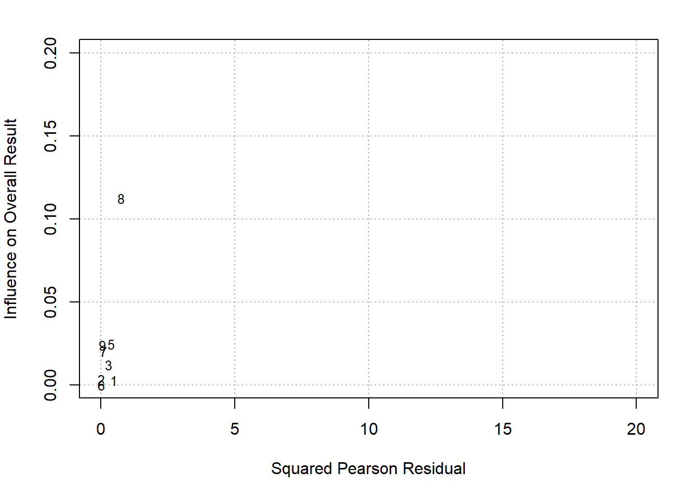

Chapter 4 Statistics
This section is not intended as a textbook on statistics. Rather it demonstrates regression approaches that can be used including sample size estimation, R codes provided.
4.1 Univariable analyses
4.1.1 Parametric tests
T-test is the workhorse for comparing if 2 datasets are have the same distribution. Performing t-test in R requires data from 2 columns: one containing the variables for comparison and one to label the group. There are different forms of t-test depending on whether the two samples are paired or unpaired. In general, the analysis takes the form of \(t=\frac{\mu_1 - \mu_2}{variance}\). It is recommended to check the distribution of the data by using histogram. For this exercise, we will use the simulated data from ECR trials. The grouping variable is the trial assignment.
#comparison of early neurological recovery (ENI) by tral (T)
dtTrial<-read.csv("./Data-Use/dtTrial_simulated.csv")
t.test(dtTrial$ENI~dtTrial$T)##
## Welch Two Sample t-test
##
## data: dtTrial$ENI by dtTrial$T
## t = 0.17454, df = 487.36, p-value = 0.8615
## alternative hypothesis: true difference in means between group 0 and group 1 is not equal to 0
## 95 percent confidence interval:
## -0.04569535 0.05460540
## sample estimates:
## mean in group 0 mean in group 1
## 0.3084644 0.30400944.1.2 Non-parametric tests
Chi-squared and Fisher-exact tests can be done by using the table function for setting up the count data into 2 x 2 contingency table or confusion matrix. The formula for the Chi-squared test takes on a familiar form \(\chi^2=\frac{(observed-expected)^2}{expected}\). In this example we will use the data above.
##
## 0 1
## 0 112 101
## 1 144 143##
## Pearson's Chi-squared test with Yates' continuity correction
##
## data: dtTrial$HT and dtTrial$T
## X-squared = 0.19553, df = 1, p-value = 0.6584The Wilcoxon rank sum test is performed with continuous data organised in the same way as the t-test. There are several different approaches to performing Wilcoxon rank sum test. The coin package allows handling of ties.
## Loading required package: survival##
## Wilcoxon rank sum test with continuity correction
##
## data: ENI by T
## W = 31159, p-value = 0.9642
## alternative hypothesis: true location shift is not equal to 04.2 Regression
There are many different form of regression methods. A key principle is that the predictors are independent of each others. This issue will be expand on in the later in the section on collinearity. Special methods are required when the predictors are collinear.
4.2.1 Brief review of matrix
A vector is has length one. A matrix is an ordered array in 2 dimensions. A tensor is an ordered array in 3 dimensions.
A matrix in which the columns are linearly related are said to be rank deficient. The rank of a given matrix is an expression of the number of linearly independent columns of that matrix. Given that row rank and column rank are equivalent, rank deficiency of a matrix is expressed as the difference between the lesser of the number of rows and columns, and the rank of the matrix. A matrix with rank of 1 is likely to be linearly related.
4.2.2 Linear (least square) regression
Least square regression uses the geometric properties of Euclidean geometry to identify the line of best. The sum of squares \(SSE\) is \(\sum(observed-expected)^2\). The \(R^2\) is a measure of the fit of the model. It is given by \(1-\frac{SS_(res)}{SS_(total)}\). Low \(R^2\) indicates a poorly fitted model and high \(R^2\) indicates excellent fitting. The assumption here is that the outcome variable is a continuous variable.
library(ggplot2)
load("./Data-Use/world_stroke.Rda")
ggplot(world_sfdf, aes(x=LifeExpectancy,y=MeanLifetimeRisk))+
geom_smooth(method="lm", aes(Group=Income, linetype=Income))+geom_point()+xlab("Life Expectancy")## `geom_smooth()` using formula = 'y ~ x'4.2.3 Logistic regression
For outcome that are binary in nature such as yes or no, then least square regression is not appropriate. There are no close form solution for this analysis and a numerical approach using maximum likelihood approach is needed. When examining the results of logistic regression one is often enchanted by the large odds ratio. It is important to look at the metrics of model calibration (discussed below). A clue to a poorly calibrated model is the observation that the width of the confidence interval for odds ratio is wide.
#glm
data("BreastCancer",package = "mlbench")
#remove id column and column with NA to feed into iml later
BreastCancer2<-lapply(BreastCancer[,-c(1,7)], as.numeric)
BreastCancer2<-as.data.frame(BreastCancer2)
DCa<-glm(Class~., data=BreastCancer2)
summary(DCa)##
## Call:
## glm(formula = Class ~ ., data = BreastCancer2)
##
## Coefficients:
## Estimate Std. Error t value Pr(>|t|)
## (Intercept) 0.723054 0.018613 38.847 < 2e-16 ***
## Cl.thickness 0.042754 0.003992 10.709 < 2e-16 ***
## Cell.size 0.019263 0.007293 2.641 0.00845 **
## Cell.shape 0.032217 0.007016 4.592 5.22e-06 ***
## Marg.adhesion 0.021463 0.004386 4.893 1.24e-06 ***
## Epith.c.size 0.011637 0.005965 1.951 0.05148 .
## Bl.cromatin 0.035266 0.005650 6.241 7.57e-10 ***
## Normal.nucleoli 0.016928 0.004247 3.986 7.44e-05 ***
## Mitoses 0.001086 0.006048 0.180 0.85757
## ---
## Signif. codes: 0 '***' 0.001 '**' 0.01 '*' 0.05 '.' 0.1 ' ' 1
##
## (Dispersion parameter for gaussian family taken to be 0.0481263)
##
## Null deviance: 157.908 on 698 degrees of freedom
## Residual deviance: 33.207 on 690 degrees of freedom
## AIC: -126.1
##
## Number of Fisher Scoring iterations: 24.2.4 Discrimination and Calibration
A high _\(R^2\) suggests that the linear regression model is well calibrated. This metric is often not displayed but should be sought when interpreting the data.
The areas under the receiver operating characteristic curve (AUC) is used to assess how well the models discriminate between those who have the disease and those who do not have the disease of interest. An AUC of 0.5 is classified as no better than by chance; 0.8 to 0.89 provides good (excellent) discrimination, and 0.9 to 1.0 provides outstanding discrimination. This rule of thumb about interpreting AUC when reading the literature is language the authors used to describe the AUC. This test of discrimination is not synonymous with calibration. It is possible to have a model with high discrimination but poor calibration (Diamond 1992). The AUC is similar to Harrells c-index but the interpretation of difference in AUC and c-index between models is not straightforward. A difference in 0.1 of AUC correspond to the number of subject rank correctly. The c-index was originally described for survival analysis (Harrell FE Jr 1982). Harrell described the c-index (concordance index) as estimating the probability that, of two randomly chosen patients, the patient with the higher prognostic score will outlive the patient with the lower prognostic score. As such the c-index should be interpreted as the number of concordant pairs relative to the total number of comparable pairs. It has been proposed that the AUC and c-index is not appropriate for survival analysis as they do not account for the dynamic nature of the data(Longato, Vettoretti, and Di Camillo 2020). The integrated Graf score has been proposed to account for difference in the estimated event-free survival probabilities with the actual outcome (Graf E 1999).
Calibration of logistic regression model is performed using the HosmerLemeshow goodness-of-t test and the Nagelkerke generalized R2. A model is well calibrated when the HosmerLemeshow goodness-of-t test shows no difference between observed and expected outcome or P value approaching 1. A high generalized \(R^2\) value suggests a well-calibrated regression model. Running regression through the rms or PredictABEL library provide these results. The generalized \(R^2\) can be obtained manually from base R by running an intercept only model and again with covariates. It is given by \(1-\frac{L1}{L0}\).
## Loading required package: Hmisc##
## Attaching package: 'Hmisc'## The following objects are masked from 'package:base':
##
## format.pval, units## Logistic Regression Model
##
## lrm(formula = Class ~ ., data = BreastCancer2)
##
## Model Likelihood Discrimination Rank Discrim.
## Ratio Test Indexes Indexes
## Obs 699 LR chi2 759.86 R2 0.915 C 0.993
## 1 458 d.f. 8 R2(8,699)0.659 Dxy 0.986
## 2 241 Pr(> chi2) <0.0001 R2(8,473.7)0.795 gamma 0.986
## max |deriv| 8e-10 Brier 0.028 tau-a 0.446
##
## Coef S.E. Wald Z Pr(>|Z|)
## Intercept -9.9477 1.0317 -9.64 <0.0001
## Cl.thickness 0.5776 0.1190 4.85 <0.0001
## Cell.size -0.0115 0.1759 -0.07 0.9479
## Cell.shape 0.5679 0.1913 2.97 0.0030
## Marg.adhesion 0.3137 0.1004 3.13 0.0018
## Epith.c.size 0.1306 0.1406 0.93 0.3529
## Bl.cromatin 0.5800 0.1456 3.98 <0.0001
## Normal.nucleoli 0.1232 0.0987 1.25 0.2120
## Mitoses 0.6092 0.3226 1.89 0.05904.2.4.1 Measuring Improvement in Regression Models
The net reclassification improvement (NRI) and integrated discrimination improvement (IDI) have been proposed as more sensitive metrics of improvement in model discrimination.The NRI can be considered as a percentage reclassication for the risk categories and the IDI is the mean difference in predicted probabilities between 2 models (constructed from cases with disease and without disease). The NRI and IDI scores are expressed as fractions and can be converted to percentage by multiplying 100.The continuous NRI and IDI can be performed using PredictABEL [Phan et al. (2017)](Phan et al. 2016).
4.2.4.2 Shapley value
We can use ideas from game theory relating to fair distribution of prot in coalition games; the coalition (co-operative) game in this case can be interpreted as contribution of the covariates to the model. The Shapley value regression method calculates the marginal contribution of each covariate as the average of all permutations of the coalition of the covariates containing the covariate of interest minus the coalition without the covariate of interest. The advantage of this approach is that it can handle multicollinearity (relatedness) among the covariates.
The feature importance is used to assess the impact of the features on the models decision
#this section takes the output from logistic regression above.
library(iml)
X = BreastCancer2[which(names(BreastCancer2) != "Class")]
predictor = Predictor$new(DCa, data = X, y = BreastCancer2$Class)
imp = FeatureImp$new(predictor, loss = "mae")
plot(imp)
From the logistic regression above cell thickness and cromatin have the highest coefficient and lowest p value. This is the same as feature importance. By contrast the Shapley values show that cell shape and marg adhesion make the largest impact on the model when considering the contribution to the model after considering all the contribution by different coalitions.

4.2.4.3 ICE
The individual conditional expectation (ICE) curves is the plot of the expectation fof the predictive value for each observation at the unique value for the feature.
#feature is the covariate of interest
par(mfrow=c(1,2))
eff_thick <- FeatureEffect$new(predictor,
feature = "Cl.thickness",
method = "ice",
center.at = 0)
plot(eff_thick)
4.2.5 Interaction
Interactions is plotted here using lollipop bar. The ggalt library can be used to create this type of plot with geom_lollipop. The strength of interaction is measured using Friedmans H-statistics. The H-statistics ranges from 0 to 1 with 1 indicating the overall interaction strength. In the case with Breast Cancer data, the interaction strength is low.
When describing interaction terms it is recommended that the results be expressed as coefficients rather than as odds ratio.

4.3 Confounder
A confounder is a covariate that serves as a cause of both exposure and outcome and as such confound the analysis. A mediator exist on the causal pathway from exposure to outcome. A common misconception is that the multiple regression adjust for imbalance in covariates in clinical trial. This issue was observed in the pivotal NINDS alteplase trial. The results of the trial has since been accepted with re-analysis of this trial using covariate adjustment (Ingall et al. 2004).
There are several methods for covariate adjustment in radomised trials: direct adjustment, standardisation and inverse-probability-of-treatment weighting.
4.3.1 Confounder weighted model
The issue asked is whether one should choose to perform confounder analysis or propensity matching.
4.3.2 Propensity matching
Propensity matching is an important technique to adjust for imbalance in covariates between 2 arms. There are concerns with mis-use of this technique such as difference in placebo arms from multiple sclerosis trials (Signori et al. 2020). It is proposed that this technique should be used only if all the confounders are measurable. This situation may not be satisfied if the data were accrued at different period, in different continent etc.
4.3.3 E-values
The E-values (VanderWeele TJ 2017) has been proposed a measure of unmeasured confounders in observational studies. The E-value is a measure of the extent to which the confounder have on the treatmentoutcome association, conditional on the measured covariates. A large E-value is desirable. The E-values is available in Evalue library (Mathur MB 2018).
4.4 Causal inference
Causation and association are often miscontrued to be the same. However, the finding of correlation (association) does necessarily imply causation. Causal inference evaluates the response of an effect variable in the setting of change in the cause of the effect variable. There are issues with approach to analysis of causal inference. It can be performed using frequentist such as confounder weighted model or Bayesian methods such as (Baysian additive regression tree).
4.5 Special types of regression
4.5.1 Ordinal regression
Ordinal regression is appropriate when the outcome variable is in the form of ordered categorical values. For example, the Rankin scale of disability is bounded between the values of 0 and 6. This type of analysis uses the proportional odds model and the requirement for this model is stringent. When examining results of ordinal regression check that the authors provide this metric, the Brant test. The Brant test assesses the parallel regression assumption. Ordinal regression is performed using polr function in MASS library. The Brant test is available in the Brant library.
4.5.2 Survival analysis
Survival analysis is useful when dealing with time to event data. Time to event data can be left, interval and right censoring. Left censoring exists when events may have already occurred at the start of the study eg purchase of phones. Right censoring exists when events have not happened yet eg cancer trial. Interval censoring exists when an insurance has been purchased but the date of product purchase is not yet known.
The Cox model assesses the hazard of outcome between two groups. The assumption of this model is that the hazard between each arm is proportional (Stensrud and Hernan 2020). The proportional hazard model can be tested based on the weighted Schoenfeld residuals(Grambsch and Therneau 1994). There are non-parametric models available when the assumption of the proportional hazard model does not hold.
In the next chapter on machine learning, an illustration of random survival forest with rfrsc library and ranger library are provided. In the section on [clinical trial][Interpreting clinical trials] we illustrate how the results can be converted to numbers needed to treat. The median survival corresponding to survival probability of 0.50 can be determined here. Metrics for assessing survival model was described above.
## Loading required package: ggpubr##
## Attaching package: 'survminer'## The following object is masked from 'package:survival':
##
## myeloma#data from survival package on NCCTG lung cancer trial
#https://stat.ethz.ch/R-manual/R-devel/library/survival/html/lung.html
data(cancer, package="survival")
#time in is available in days
#status censored=1, dead=2
#sex:Male=1 Female=2
survfit(Surv(time, status) ~ 1, data = cancer)## Call: survfit(formula = Surv(time, status) ~ 1, data = cancer)
##
## n events median 0.95LCL 0.95UCL
## [1,] 228 165 310 285 363## Call:
## coxph(formula = Surv(time, status) ~ age + sex + ph.ecog + ph.karno +
## wt.loss, data = cancer)
##
## n= 213, number of events= 151
## (15 observations deleted due to missingness)
##
## coef exp(coef) se(coef) z Pr(>|z|)
## age 0.015157 1.015273 0.009763 1.553 0.120538
## sex -0.631422 0.531835 0.177134 -3.565 0.000364 ***
## ph.ecog 0.740204 2.096364 0.191332 3.869 0.000109 ***
## ph.karno 0.015251 1.015368 0.009797 1.557 0.119553
## wt.loss -0.009298 0.990745 0.006699 -1.388 0.165168
## ---
## Signif. codes: 0 '***' 0.001 '**' 0.01 '*' 0.05 '.' 0.1 ' ' 1
##
## exp(coef) exp(-coef) lower .95 upper .95
## age 1.0153 0.9850 0.9960 1.0349
## sex 0.5318 1.8803 0.3758 0.7526
## ph.ecog 2.0964 0.4770 1.4408 3.0502
## ph.karno 1.0154 0.9849 0.9961 1.0351
## wt.loss 0.9907 1.0093 0.9778 1.0038
##
## Concordance= 0.64 (se = 0.026 )
## Likelihood ratio test= 33.53 on 5 df, p=3e-06
## Wald test = 32.27 on 5 df, p=5e-06
## Score (logrank) test = 32.83 on 5 df, p=4e-06Test proportional hazard assumption using weighted residuals (Grambsch and Therneau 1994). The finding below shows that inclusion of covariate ph.karno violate proportional hazard assumption.
## chisq df p
## age 0.186 1 0.666
## sex 2.059 1 0.151
## ph.ecog 1.359 1 0.244
## ph.karno 4.916 1 0.027
## wt.loss 0.110 1 0.740
## GLOBAL 7.174 5 0.208Plot fit of survival model
## Warning: `gather_()` was deprecated in tidyr 1.2.0.
## Please use `gather()` instead.
## The deprecated feature was likely used in the survminer package.
## Please report the issue at <https://github.com/kassambara/survminer/issues>.
## This warning is displayed once every 8 hours.
## Call `lifecycle::last_lifecycle_warnings()` to see where this warning was
## generated.## `geom_smooth()` using formula = 'y ~ x'
Forest plot of outcome from survival analysis

An alternative way to display the output from Cox regression is to use forestmodel library .
The pseudoR2 for Cox regression model proposed by Royston can be evaluated
## D se(D) R.D R.KO R.N C.GH
## 0.8546894 0.1495706 0.1484960 0.1515108 0.1459168 0.64188944.5.3 Quantile regression
Least spare regression is appropriate when the data is homoscedascity or the error term remain constant. This can be seen as the data varies around the fitted line. Homoscedascity implies that the data is homogenous. Quantile regression is appropriate when the distribution of the data is non-normal and it is more appropriate to look at the conditional median of the dependent variable. There are several libraries for this task quantreg and Bayesian libraries. In the example below, the life time risk of stroke is regressed against life expectancy using lest square and quantile regression.
library(quantreg)
library(ggplot2)
load("./Data-Use/world_stroke.Rda")
#quantile regression
rqfit <- rq( MeanLifetimeRisk~ LifeExpectancy, data = world_sfdf)
rqfit_sum<-summary(rqfit)
#least square regression
lsfit<-lm(MeanLifetimeRisk~LifeExpectancy,data=world_sfdf)
lsfit_sum<-summary(lsfit)
#plot
ggplot(world_sfdf, aes(x=LifeExpectancy,y=MeanLifetimeRisk))+
#add fitted line for least square
geom_abline(intercept =lsfit_sum$coefficients[1], slope=lsfit_sum$coefficients[2],color="red")+
#add fitted line for quantile regression
geom_point()+xlab("Life Expectancy")+
geom_abline(intercept =rqfit_sum$coefficients[1], slope=rqfit_sum$coefficients[2],color="blue")
#annotate least square and quantile at position x, y
#annotate("text",x=60, y=27, label=paste0("least square =", round(lsfit_sum$coefficients[1],2) ,"+", round(lsfit_sum$coefficients[2],2),"x ","Life Expectancy"),color="red")+ annotate("text",x=75, y=12,label=paste0("quantile =",round(rqfit_sum$coefficients[1],2), " + ", round(rqfit_sum$coefficients[2],2)," x ","Life Expectancy"),color="blue")4.5.4 Non-negative regression
In certain situations, it is necessary to constrain the analysis so that the regression coefifcients are non-negative. For example, when regressing brain regions against infarct volume, there is no reason believe that a negative coefficient attributable to a brain region is possible(Phan, Donnan, Koga, et al. 2006) . Non-negative regression can be performed in R using nnls.
4.5.5 Poisson regression
Poisson regression is used when dealing with number of event over time or distance such as number of new admissions or new cases of hepatitis or TIA over time. An assumption of the Poisson distribution is that the mean & lambda; and variance are the same.
A special case of Poisson regression is the negative binomial regression. This latter method is used when the variance is greater than the mean pf the data or over-dispersed data. Negative binomial regression can be applied to number of failure event over time. Here failure has a lose definition and can be stroke recurrence after TIA or cirrhosis after hepatitis C infection.
Zero-inflated data occurs when there is an abundance of zeroes in the data (true and excess zeroes).
4.5.6 Conditional logistic regression
Conditional logistical regression model should be used when the aim is to compare pair of objects from the same patient. Examples include left and right arms or left and right carotid arteries. This method is available from clogit in survival.
4.5.7 Multinomial modelling
Multinomial modelling is used when the outcome categorical variables are not ordered. This situation can occur when analysis involves choice outcome (choices of fruit: apple, orange or pear). In this case, the log odds of each of the categorical outcomes are analysed as a linear combination of the predictor variables. The nnet library have functions for performing this analysis.
4.6 Sample size estimation
Clinicians are often frustrated about sample size and power estimation for a study, grant or clinical trial. This aspect is scrutinised by ethics committee and in peer review process for journals. Luckily, R provides several packages for sample size amd power estimation: pwr library. Cohen has written reference textbook on this subject (Cohen 1977).
4.6.1 Proportion
library(pwr)
#ttest-d is effect size
#d = )mean group1 -mean group2)/variance
pwr.t.test(n=300,d=0.2,sig.level=.05,alternative="greater") ##
## Two-sample t test power calculation
##
## n = 300
## d = 0.2
## sig.level = 0.05
## power = 0.7886842
## alternative = greater
##
## NOTE: n is number in *each* groupWe provided an example below for generating power of clinical trial. Examples are taken from a paper on sample size estimation for phase II trials (Phan, Donnan, Davis, et al. 2006).
library(pwr)
#h is effect size. effect size of 0.5 is very large
#sample size
pwr.2p.test(h=0.5,n=50,sig.level=0.05,alternative="two.sided")##
## Difference of proportion power calculation for binomial distribution (arcsine transformation)
##
## h = 0.5
## n = 50
## sig.level = 0.05
## power = 0.705418
## alternative = two.sided
##
## NOTE: same sample sizes##
## Difference of proportion power calculation for binomial distribution (arcsine transformation)
##
## h = 0.1
## n = 50
## sig.level = 0.05
## power = 0.07909753
## alternative = two.sided
##
## NOTE: same sample sizesThe output of the sample size calculation can be put into a table or plot.
library(pwr)
#pwr.2p.test(h=0.3,n=80,sig.level=0.05,alternative="two.sided")
h <- seq(.1,.5,.1) #from 0.1 to 0.3 by 0.05
nh <- length(h) #5
p <- seq(.3,.9,.1)# power from 0.5 to 0.9 by 0.1
np <- length(p) #9
# create an empty array 9 x 5
samplesize <- array(numeric(nh*np), dim=c(nh,np))
for (i in 1:np){
for (j in 1:nh){
result <- pwr.2p.test(n = NULL, h = h[j],
#result <- pwr.r.test(n = NULL, h = h[j],
sig.level = .05, power = p[i],
alternative = "two.sided")
samplesize[j,i] <- ceiling(result$n)
}
}
samplesize## [,1] [,2] [,3] [,4] [,5] [,6] [,7]
## [1,] 412 583 769 980 1235 1570 2102
## [2,] 103 146 193 245 309 393 526
## [3,] 46 65 86 109 138 175 234
## [4,] 26 37 49 62 78 99 132
## [5,] 17 24 31 40 50 63 85#graph
xrange <- range(h)
yrange <- round(range(samplesize))
colors <- rainbow(length(p))
plot(xrange, yrange, type="n",
xlab="Effect size (h)",
ylab="Sample Size (n)" )
# add power curves
for (i in 1:np){
lines(h, samplesize[,i], type="l", lwd=2, col=colors[i])
}
# add annotation (grid lines, title, legend)
abline(v=0, h=seq(0,yrange[2],50), lty=2, col="grey89")
abline(h=0, v=seq(xrange[1],xrange[2],.02), lty=2,
col="grey89")
title("Sample Size Estimation\n Difference in Proportion")
legend("topright", title="Power", as.character(p),
fill=colors)
4.6.1.1 Non-inferiority
Non-inferiority trials may offer information in a way that a traditional superiority design do not. The design may be interested in other aspect of the treatment such as cost and lower toxicity (Kaji and Lewis 2015). Examples of non-inferiority trial designs include antibiotics versus surgery for appendicitis (Salminen et al. 2015). There are concerns with reporting of noninferiority trial. Justification for the margin provided in 27.6% (Gopal et al. 2015). The following describes a trial design where its expected that drug will result in a certain outcome p1 and the control arm p2 and the ratio of subject in treatment to control arm is k. The difference in outcome is delta. The margin is defined as non-inferior if <0.
library(TrialSize)
TwoSampleProportion.NIS(alpha=.05,
beta=.8,
p1=.6,
p2=.7,
k=1,
delta = .1,
margin=-.2
)## [1] 3.2259114.6.2 Logistic regression
library(powerMediation)
library(ggplot2)
#continuous predictor
#p1=event rate
#exp(0.405) =1.5
powerLogisticCon(n=200, p1=0.265, OR=exp(0.014), alpha=0.05)## [1] 0.03056289# creating a data frame using data from
a=seq(0,05.4,0.05)
df_power<-data.frame(`ASPECTS`= a,
"Power"=powerLogisticCon(n=100, p1=a, OR=exp(.695), alpha=0.05)
)## Warning in sqrt(n * beta.star^2 * p1 * (1 - p1)): NaNs produced## Warning: Removed 88 rows containing missing values (`geom_point()`).An alternative library to perform sample size for logistic regression is WebPower library.
## Loading required package: lme4##
## Attaching package: 'lme4'## The following object is masked from 'package:modeltools':
##
## refit## The following object is masked from 'package:nlme':
##
## lmList## The following object is masked from 'package:MatrixModels':
##
## mkRespMod## The following object is masked from 'package:generics':
##
## refit## Loading required package: lavaan## This is lavaan 0.6-15
## lavaan is FREE software! Please report any bugs.## Loading required package: PearsonDSwp.logistic(p0=0.007, #Prob (Y=1|X=0)
p1=0.012, #Prob (Y=1|X=1)
alpha=0.05,
power=0.80,
alternative="two.sided",
family="normal")## Power for logistic regression
##
## p0 p1 beta0 beta1 n alpha power
## 0.007 0.012 -4.954821 0.5440445 3336.2 0.05 0.8
##
## URL: http://psychstat.org/logistic4.6.3 Survival studies
Sample size for survival studies can be performed using powerSurvEpi or gsDesign.
library(powerSurvEpi)
#sample size
ssizeEpi.default(power = 0.80,
theta = 2,
p = 0.408 ,
psi = 0.15,
rho2 = 0.344^2,
alpha = 0.05)## [1] 512## [1] 1#Amarenco NEJM 2020 #equal sample size k=1
ssizeCT.default(power = 0.8, k = .8, pE = 0.085,
pC = 0.109,
RR = 0.78, alpha = 0.05)## nE nC
## 2417 30214.7 Randomised clinical trials
A common misconception is that the multiple regression adjust for imbalance in covariates in clinical trial. This issue was observed in the pivotal NINDS alteplase trial. The results of the trial has since been accepted with re-analysis of this trial using covariate adjustment(Ingall et al. 2004). There are several methods for covariate adjustment in radomised trials: direct adjustment, standardisation and inverse-probability-of-treatment weighting.
4.7.1 Covariate adjustment in trials
Specifically, covariate adjustment refers to adjustment of covariates available at the time of randomisation, i.e.prespecified variables and not variables after randomisation such as pneumonia post stroke trials. The advantage of covariate adjustment is that it results in narrower confidence interval as well as increase the power of the trial up to 7% (Kahan 2014). The increased power is highest when prognostic variables are used but can decrease power when non-prognostic variables are used (Kahan 2014).
4.7.2 Subgroup analysis
Subgroup analysis can be misleading especially if not specified prior to trial analysis (Wang et al. 2007). Furthermore, increasing the number of subgroup analysis will lead to increasing the chance of false positive result or multiplicity. It is important to differentiate between prespecified and posthoc analyses as posthoc analyses may be biased by examination of the data.
4.7.3 p value for interaction
The p value for interaction describe the influence by a baseline variable treatment effect on outcome in clinical trial (Wang et al. 2007). In a hypothetical trial, a significant p value for interaction between males and females for treatment effect on primary outcome indicates heterogenity of treatment effect.
## Warning: package 'Publish' was built under R version 4.3.2## Loading required package: prodlim## Registered S3 method overwritten by 'Publish':
## method from
## print.ci coin4.7.4 Interpreting risk reduction in clinical trials
A key issue in interpreting of clinical trials occurs when the relative risk reduction or relative hazard risk are provided. This issue affect the clinical interpretation of the trial finding and its application in practice. An example is the result of the ACAS asymptomatic carotid artery trial is often quoted as showing 50% risk reduction. In fact, there was 2% annual risk of ipsilateral stroke in the medical and 1% risk in the surgical arm. The absolute risk reduction or ARR was 1% per year. However, the 50% relative risk reduction is often quoted to explain to patients.
4.7.5 NNT from ARR
In this case, the number needed to treat (NNT) is given by \(\frac{1}{ARR}\) or \(\frac{1}{0.01}=100\) to achieve the trial outcome or 100 patients are needed to be treated to reduce the stroke risk to 1%. The recommendation is that the 95% confidence interval for NNT should be provided.
4.7.6 NNT from odds ratio
Calculation of NNT for odds ratio requires knowledge of the outcome of the placebo group. The NNT is given by \(\frac{1}{ACR-\frac{OR*ACR}{1-(ACR+OR*ACR)}}\). The ACR represents the assumed control risk. The NNT can be calculated from nnt function in meta library.
## Warning: package 'meta' was built under R version 4.3.2## Loading required package: metadat## Loading 'meta' package (version 7.0-0).
## Type 'help(meta)' for a brief overview.
## Readers of 'Meta-Analysis with R (Use R!)' should install
## older version of 'meta' package: https://tinyurl.com/dt4y5drs## OR p.c NNT
## 1 0.73 0.3 16.208114.7.7 NNT from risk ratio
#data from EXTEND-IV trial in NEJM 2019
#outcome 35.4% in tpa and 29.5% in control
nnt(1.44, p.c = 0.295, sm = "RR")## RR p.c NNT
## 1 1.44 0.295 -7.704164.7.8 NNT from hazard ratio
Calculation of NNT for hazard ratio requires knowledge of the outcome of the placebo group and the hazard ratio or HR. The formula using the binomial theorem is \(p=1-q\) where q is given by the ratio of outcome and numbers recruited in the placebo group. The formula is taken from (Ludwig, Darmon, and Guerci 2020) . The NNT is given \(\frac{1}{[p^{HR}-p}\) . We illustrated this using data from metaanalysis on aspirin use in stroke in Lancet 2016. There were 45 events among 16053 patients in the control group. The HR was 0.44. The NNT from this formula \(\frac{1}{.9971968^.44-.9971968}\) was 637.
4.7.9 NNT from metaananlysis
There are concerns with using NNT from the results of metaanalysis as the findings are amalgations of trials with different settings (Marx 2003) (Smeeth 1999). The caution applies when baseline risks or absolute risk differences vary across trials.
4.8 Diagnostic test
4.8.1 Sensitivity, specificity
The sensitivity of a diagnostic test is the true positive rate and the specificity is the true negative rate. Example of 2 x 2 table is provided here. As an exercise, consider a paper about a diagnostic test for peripheral vertigo reporting 100% sensitivity and 94.4% specificity. There are 114 patients, 72 patients without stroke have vertigo and positive test findings. Among patients with stroke 7 of 42 have positive test findings. The sensitivity is \(TP=\frac{TP}{TP+FN}\) and the specificity is the \(TN=\frac{TN}{TN+FP}\).
# Peripheral Vertigo
# Disease Positive Disease Negative
#$$$$$$$$$$$$$$$$$$$$$$$$$$$$$$$$$$$$$$$$$$$$$$$$$$$
# HIT Test# # $
# Positive# True Positive # False Positive $
# # 72 # 7 $
#$$$$$$$$$$$$$$$$$$$$$$$$$$$$$$$$$$$$$$$$$$$$$$$$$$$
# HIT Test# # $
# Negative# False Negative # True Negative $
# # 0 # 35 $
#$$$$$$$$$$$$$$$$$$$$$$$$$$$$$$$$$$$$$$$$$$$$$$$$$$$
# Peripheral Vertigo
#Sensitiviy=TP/(TP+FN)=100%
#Specificity=TN/(TN+FP)=83%4.8.2 AUC
The area under the receiver operating characteristics (ROC) curve or AUC is a measure of the accuracy of the test. It is recommended that ROC curve is used when there are multiple threshold. It should not be used when the test has only one threshold. Some investigators suggest caution regarding the validity of using receiver operating curve with single threshold diagnostic tests (J 2020). An AUC of 0.5 is classified as no better than by chance; 0.60.69 provides poor discrimination; 0.70.79 provides acceptable (fair) discrimination, 0.8 to 0.89 provides good (excellent) discrimination, and 0.9 to 1.0 provides outstanding discrimination.
4.8.3 Likelihood ratio
Positive likelihood ratio (PLR) is the ratio of sensitivity to false positive rate (FPR); the negative (NLR) likelihood ratio is the ratio of 1-sensitivity to specificity. A PLR indicates the likelihood that a positive spot sign (test) would be expected in a patient with ICH (target disorder) compared with the likelihood that the same result would be expected in a patient without ICH. Using the recommendation by Jaeschke et al, a high PLR (>5) and low NLR (<0.2) indicate that the test results would make moderate changes in the likelihood of hematoma growth from baseline risk. PLRs of >10 and NLRs of <0.1 would confer very large changes from baseline risk .
4.8.3.1 Fagans normogram
Fagans normogram can be conceptualised as a sliding ruler to match the disease prevalence and likelihood ratios to evaluate the impact on the post-test probability (TJ 1975). At the current disease prevalence of 23.4% and PLR 4.65, the post-test probability remains low at 0.60.
source("https://raw.githubusercontent.com/achekroud/nomogrammer/master/nomogrammer.r")
p<-nomogrammer(Prevalence = .234, Plr = 4.85, Nlr = 0.49)## Warning: Using `size` aesthetic for lines was deprecated in ggplot2 3.4.0.
## Please use `linewidth` instead.
## This warning is displayed once every 8 hours.
## Call `lifecycle::last_lifecycle_warnings()` to see where this warning was
## generated.
4.8.3.2 Likelihood ratio graph
Likelihood ratio graph is a tool for comparing diagnostic tests (BJ 2000).
#plot likelihood ratio graph
LR_graph<-function (Read,sheet,Sensitivity, Specificity){
Read1<-readxl::read_xlsx(Read, sheet = sheet)
#binary data
#A=True pos %B=False positive %C=False negative %D=True negative
A=Read1$TP
B=Read1$FP
C=Read1$FN
D=Read1$TN
TPR=A/(A+C)
FPR=1-(D/(D+B))
TPR_DiagnosticTest=Sensitivity
FPR_DiagnosticTest=1-Specificity
# set plot
X=seq(0,1,by=.1)
Y=seq(0,1,by=.1)
plot(X,Y,main="Likelihood Ratio graph", xlab="1-Specificity",ylab="Sensitivity",cex=.25)
#pch describe the shape. The value 1 corresponds o
points(FPR_DiagnosticTest,TPR_DiagnosticTest,pch=8,col="blue",cex=2)
#pch describe the shape. The value 8 corresponds *
points(FPR,TPR,pch=1,col="red",cex=2) #add point
#abline(coef = c(0,1)) #add diagonal line
df1<-data.frame(c1=c(0,TPR_DiagnosticTest),c2=c(0,FPR_DiagnosticTest))
reg1<-lm(c1~c2,data=df1)
df2<-data.frame(c1=c(TPR_DiagnosticTest,1),c2=c(FPR_DiagnosticTest,1))
reg2<-lm(c1~c2,data=df2)
abline(reg1)
abline(reg2)
text(x=FPR_DiagnosticTest,y=TPR_DiagnosticTest+.3,label="Superior",cex=.7)
text(x=FPR_DiagnosticTest+.2,y=TPR_DiagnosticTest+.2,label="Absence",cex=.7)
text(x=.0125,y=TPR_DiagnosticTest-.1,label="Presence",cex=.7)
text(x=FPR_DiagnosticTest+.1,y=TPR_DiagnosticTest,label="Inferior",cex=.7)
text(x=.7,y=.2,label="Reference = Content Expert",cex=.7)
text(x=.7,y=.15, label="Diagnostic Test software", cex=.7)
}Runnning the function from above
#Sensitivity=0.623
#Specificity=1-.927
LR_graph("./Data-Use/Diagnostic_test_summary.xlsx",1,.623,.927)## New names:
## `` -> `...11`
4.9 Metaanalysis
During journal club, junior doctors are often taught about the importance of metaanalysis. It is worth knowing how to perform a metaanalysis in order to critique the study. This is an important issue as the junior doctor is supervised by someone who a content expert but not necessarily a method expert. Metaanalysis can be performed for clinical trials, cohort studies or diagnostic studies. As an example, it is not well known outside of statistics journal that the bivariate analysis is the preferred method to evaluate diagnostic studies (Reitsma et al. 2005). By contrast, the majority of metaanalysis of diagnostic studies uses the univariate method of Moses and Littenberg (Moses, Shapiro, and Littenberg 1993). This issue will be expanded below.
4.9.1 Quality of study
All studies require evaluation of the quality of the individual studies. This can be done with the QUADAS2 tool, available at https://annals.org/aim/fullarticle/474994/quadas-2-revised-tool-quality-assessment-diagnostic-accuracy-studies.
4.9.2 PRISMA
The PRISMA statement is useful for understanding the search strategy and the papers removed and retained in the metaanalysis. An example of generating the statement is provided below in R. The example given here is from a paper on the use of spot sign to predict enlargment of intracerebral hemorrhage (Phan et al. 2019).
library(PRISMAstatement)
#example from Spot sign paper. Stroke 2019
prisma(found = 193,
found_other = 27,
no_dupes = 141,
screened = 141,
screen_exclusions = 3,
full_text = 138,
full_text_exclusions = 112,
qualitative = 26,
quantitative = 26,
width = 800, height = 800)#https://rich-iannone.github.io/DiagrammeR/graphviz_and_mermaid.html#attributes
library(DiagrammeR)
grViz("
digraph boxes_and_circles {
# a 'graph' statement
graph [overlap = true, fontsize = 10]
# several 'node' statements
node [shape = box,
fontname = Helvetica]
Stroke
node [shape = oval,
fixedsize = false,
color=red,
width = 0.9]
Hypertension; 'No Hypertension'
node [shape= circle,
fontcolor=red,
color=blue,
fixedsize=false]
Hypokalemia; 'No Hypokalemia'
# several 'edge' statements
edge [arrowhead=diamond]
Stroke->{Hypertension, 'No Hypertension'}
Hypertension->{Hypokalemia, 'No Hypokalemia'}
}
")## alternative
grViz("digraph flowchart {
# node definitions with substituted label text
node [fontname = Helvetica, shape = rectangle]
tab1 [label = '@@1']
tab2 [label = '@@2']
tab3 [label = '@@3']
tab4 [label = '@@4']
tab5 [label = '@@5']
# edge definitions with the node IDs
tab1 -> tab3
tab1-> tab2
#tab2->tab3
tab2 -> tab4
tab2-> tab5;
}
[1]: 'Stroke n=19'
[2]: 'Hypertension n=10'
[3]: 'No Hypertension n=9'
[4]: 'Hypokalemia n=?'
[5]: 'No Hypokalemia n=?'
")4.9.3 Conversion of median to mean
One issue with performing metaanalysis is that one paper may report mean and another report median age. The formula for the mean is given by \(\frac{a+2m+b}{4}\) where m is the median, a is the upper and b is the lower range (Wan 2014). The variance is given by \(S^2=\frac{1}{12}(\frac{(a+2m+b)^2}{4}+{(b-a)^2})\). This formula requires examination of the data such as the figure to obtain the upper and lower range. These changes are incorporated into meta libray using meatamean function (Balduzzi, Rcker, and Schwarzer 2019). More recently, investigators suggest to also consider the skewness of the data from the 5 number summary data (Shi et al. 2023). The argument method.mean in function metamean is used to specify the method for estimating the mean. In this case we chose the Luo method for illustration Luo (Luo et al. 2018). See the help page by typing question mark before metamean for more options.
library(meta)
#NIHSS data from ANGEL large core trial in NEJM 2023
metamean(q1=4,q3=20,median=16,n=230, method.mean = "Luo")## Number of observations: o = 230
##
## mean 95%-CI
## 13.1932 [11.6506; 14.7358]
##
## Details:
## - Untransformed (raw) meansHere the same data is used for the McGrath method (McGrath et al. 2020).
## Number of observations: o = 230
##
## mean 95%-CI
## 13.3333 [11.7907; 14.8759]
##
## Details:
## - Untransformed (raw) meansThe conversion from median to mean in metafor is performed using conv.fivenum function (Viechtbauer 2010). There is an update on the metafor page as well as discussion on alternate approach. The default method of this function is to use the methods by Luo (Luo et al. 2018), Wan (Wan 2014) and Shi (Shi et al. 2023)
## Loading required package: numDeriv##
## Loading the 'metafor' package (version 4.2-0). For an
## introduction to the package please type: help(metafor)##
## Attaching package: 'metafor'## The following object is masked from 'package:rms':
##
## vif# example data frame
EstMean <- data.frame(Paper=c(1:4,NA), min=c(1,2,NA,2,NA), q1=c(NA,NA,4,4,NA),
median=c(5,6,6,6,NA), q3=c(NA,NA,10,10,NA),
max=c(12,14,NA,14,NA),
mean=c(NA,NA,NA,NA,7.0), sd=c(NA,NA,NA,NA,4.2),
n=c(30,30,30,30,30))
EstMean## Paper min q1 median q3 max mean sd n
## 1 1 1 NA 5 NA 12 NA NA 30
## 2 2 2 NA 6 NA 14 NA NA 30
## 3 3 NA 4 6 10 NA NA NA 30
## 4 4 2 4 6 10 14 NA NA 30
## 5 NA NA NA NA NA NA 7 4.2 30## Paper min q1 median q3 max mean sd n
## 1 1 1 NA 5 NA 12 5.356748 2.695707 30
## 2 2 2 NA 6 NA 14 6.475664 2.940771 30
## 3 3 NA 4 6 10 NA 6.713000 4.670521 30
## 4 4 2 4 6 10 14 6.882074 3.546379 30
## 5 NA NA NA NA NA NA 7.000000 4.200000 30The estmeansd library uses quantile estimation method with qe.mean.sd function when the data available are the median and quartile ranges (McGrath et al. 2020) (McGrath et al. 2022).The approach here is to use simulation to estimate the parameters.
## Warning: package 'estmeansd' was built under R version 4.3.2#data from ANGEL large core trial in NEJM 2023
res_qe <- bc.mean.sd(q1.val = 13, med.val = 16, q3.val = 20, n = 230)
res_qe ## $est.mean
## [1] 17.14476
##
## $est.sd
## [1] 5.650041The standard error from the mean can be estimated using get_SE function.
## $est.se
## [1] 0.5102898
##
## $boot_means
## [1] 16.66390 16.69817 15.89256 17.19883 16.55661 17.26537 17.12770 17.63886
## [9] 17.41694 16.82139 17.60338 17.06845 16.98280 17.47791 17.13287 16.74243
## [17] 16.06546 16.25667 16.40406 16.98778 16.24305 17.06542 17.10770 18.22134
## [25] 15.71684 16.62984 16.31952 16.28308 16.23341 17.07702 16.67616 16.98810
## [33] 16.04105 16.82488 16.63304 17.23908 16.62816 15.63161 16.48613 16.50746
## [41] 16.97719 16.51825 16.14368 16.46287 16.72329 16.41238 16.50369 16.56787
## [49] 17.29346 16.98682 16.72249 16.47381 17.06320 16.77228 16.60950 16.75800
## [57] 16.66580 16.18258 16.40676 16.29448 15.29017 15.70036 16.85384 16.73239
## [65] 15.43095 17.84255 16.36621 16.31963 16.86287 15.72336 16.22607 16.30642
## [73] 15.66034 16.28695 17.02475 17.16609 17.17116 17.13025 18.25489 16.96275
## [81] 16.92366 15.88248 16.72140 17.48468 16.23346 17.32635 16.61420 16.59357
## [89] 16.18030 16.40490 15.63667 17.94863 16.42327 16.30130 16.69097 16.45597
## [97] 16.92336 16.40641 16.28127 17.24317 16.81325 16.68946 16.16723 16.89440
## [105] 16.87757 16.40807 17.08656 16.45680 17.05380 16.81444 16.63864 17.20234
## [113] 16.65630 16.97083 16.54165 16.88519 17.19829 17.05603 16.14812 17.42908
## [121] 16.47652 17.50298 16.30331 16.73512 16.76411 16.94170 16.78335 17.05584
## [129] 16.60727 16.79810 16.88574 17.00636 16.46055 16.48565 15.83848 16.96492
## [137] 16.50078 16.82822 17.11683 16.76974 16.55876 17.25655 16.61590 16.91282
## [145] 15.99394 17.02790 17.03099 17.65331 17.11030 16.78000 16.21339 16.74618
## [153] 17.72906 16.79823 16.12686 16.43094 16.27106 17.24803 16.44198 16.20235
## [161] 16.78196 16.15586 16.28770 16.33374 16.80457 16.84903 16.97197 16.90438
## [169] 16.98154 16.25183 16.63521 16.08649 16.45472 16.48943 16.84175 15.98306
## [177] 16.89773 16.01818 17.30585 16.50023 16.64798 15.81947 16.86979 16.34850
## [185] 16.47819 16.26823 17.02212 17.41595 16.83327 17.25751 17.62506 17.08525
## [193] 16.03609 16.96108 16.66225 16.47223 16.11247 15.59941 17.14970 16.95419
## [201] 16.50262 16.26690 16.84078 16.57393 16.59575 16.52833 17.18014 17.05306
## [209] 15.65881 16.65131 16.35482 15.75010 16.77303 17.15287 15.69514 17.37811
## [217] 16.47265 16.45071 17.23837 16.68875 17.10401 16.91896 16.90243 17.17555
## [225] 16.57668 16.87490 17.48830 17.11829 17.06430 16.45008 17.19665 16.12800
## [233] 16.81580 16.58545 15.95984 16.14233 16.72764 16.21510 16.60622 16.67476
## [241] 16.99073 16.65368 16.51003 16.78206 17.49427 17.24463 16.81030 17.01023
## [249] 17.59830 16.88146 16.99891 15.43474 16.59445 15.57332 17.88297 16.98120
## [257] 16.57203 16.34280 17.35349 17.40068 16.29080 16.30923 16.32896 15.91147
## [265] 16.92131 17.44460 16.58439 17.18785 16.61905 16.55740 17.39960 16.62983
## [273] 16.15647 17.19792 16.64086 17.95710 16.53210 17.76875 18.05950 17.18600
## [281] 16.02285 16.48049 17.01223 16.57632 16.62798 16.93156 16.68815 16.63011
## [289] 16.97096 16.66177 17.18486 16.91122 16.87738 16.76235 17.32905 16.71355
## [297] 17.07581 15.97298 17.04653 16.65056 17.00158 17.24009 16.64022 16.38995
## [305] 17.13773 17.15573 17.79099 17.68078 16.70721 17.28505 15.91946 16.50384
## [313] 16.96997 16.95185 15.83475 16.33372 16.61356 16.55019 15.50628 16.58150
## [321] 16.78615 17.59912 16.91465 17.14837 16.52759 17.54634 16.22741 17.03333
## [329] 16.19908 17.16992 17.20690 16.21432 17.29767 16.34184 16.43202 16.92260
## [337] 16.52879 16.57742 16.72837 16.73170 16.98930 17.38665 16.94329 17.14435
## [345] 16.60608 16.87458 16.43892 16.44838 17.19973 17.16572 16.98323 17.12301
## [353] 17.43208 16.00597 17.08275 16.40327 17.36462 17.36512 15.92835 16.84114
## [361] 16.54553 17.29970 16.68390 15.86605 16.61414 16.62438 16.38585 17.00589
## [369] 16.41819 17.33280 16.77215 16.79483 16.72286 16.07997 16.33566 15.70615
## [377] 17.08738 16.26688 15.98156 16.54304 17.02981 16.76078 17.36708 16.81734
## [385] 16.07007 17.09194 17.70375 16.94583 16.35173 16.15827 17.47920 17.18136
## [393] 15.90159 17.37906 16.33930 16.92159 17.15558 16.73426 17.09414 16.37992
## [401] 17.14400 16.85447 17.00924 16.57262 16.53880 17.00669 16.71665 17.37289
## [409] 17.32158 16.87272 16.25992 16.11820 17.61014 16.89474 17.48792 16.46693
## [417] 16.27302 16.85829 17.17407 15.69916 17.04194 16.15027 16.48802 16.23594
## [425] 16.92020 15.95365 16.36527 16.82771 16.65370 16.87483 15.56613 17.23290
## [433] 17.58024 17.45919 18.33801 17.31612 17.25300 16.22515 17.00340 17.22449
## [441] 17.22091 16.95706 17.38857 16.31062 17.54040 17.25248 18.35978 16.61568
## [449] 17.13831 17.55593 16.68882 17.40981 17.37656 17.44421 17.00983 17.03580
## [457] 17.16939 16.71202 16.77490 16.69644 17.26074 17.33776 17.05292 16.97609
## [465] 16.84245 17.30706 16.67555 16.39560 16.38627 16.66285 17.06987 17.04695
## [473] 16.99143 17.11926 17.31483 17.76141 16.54000 16.92423 16.48560 16.32153
## [481] 16.94677 17.00891 16.75018 16.91479 16.40788 17.31253 17.77492 16.71086
## [489] 17.11449 16.04348 16.98537 15.70928 16.32160 16.30002 17.82745 16.87492
## [497] 16.31042 17.53756 16.92455 17.24326 16.78227 15.95024 16.84337 16.99254
## [505] 16.78454 16.76887 16.86679 16.25574 16.92961 16.02868 16.62991 16.88548
## [513] 16.45305 16.75567 16.56051 16.15590 17.19629 16.38255 16.15506 17.31280
## [521] 17.24406 15.99549 16.56884 17.18757 17.02471 16.77021 16.27013 16.86561
## [529] 16.39335 17.81978 16.57930 16.00565 16.54933 16.05425 16.39525 17.75376
## [537] 16.15048 17.57924 17.35005 16.77684 16.55036 16.73871 17.13219 16.79646
## [545] 16.51802 17.29724 16.29661 17.28578 17.56532 17.51885 16.77056 16.00573
## [553] 16.67769 16.78641 16.23304 16.58838 16.49009 16.99835 16.89950 17.45483
## [561] 16.96401 17.45701 16.89983 17.30552 17.08768 15.46666 16.05557 17.20520
## [569] 16.16966 17.36305 15.81409 16.59071 17.86897 16.28986 16.36243 16.50485
## [577] 17.23279 16.67212 16.20760 17.04323 16.46212 16.23928 17.15327 17.07648
## [585] 17.13789 16.97970 16.55518 17.74439 16.56618 17.16697 15.29274 16.65612
## [593] 16.34491 16.92109 16.59135 16.78995 16.80833 17.11525 15.98219 16.57879
## [601] 17.03002 17.14752 16.54208 16.44082 16.03760 16.60479 16.50938 16.45549
## [609] 16.80612 16.71769 16.57500 16.79048 16.10227 16.13110 17.25797 16.46660
## [617] 16.48700 17.57859 16.95572 17.37138 16.56578 15.92920 16.26423 16.39801
## [625] 16.03608 16.86167 17.33199 17.16877 16.71535 17.78375 16.38696 16.84344
## [633] 17.73923 16.99409 16.85281 16.44584 16.50495 16.66592 16.79871 16.77443
## [641] 16.60523 16.93995 17.06959 16.53240 17.50337 16.91155 17.46380 16.56852
## [649] 16.60102 17.74939 16.85360 15.86915 16.64602 16.37676 17.08016 16.83050
## [657] 17.29055 16.91859 15.96536 17.07857 16.43210 16.39255 17.21388 16.57483
## [665] 17.10986 17.02509 16.61743 16.87328 16.96959 15.48141 16.94314 16.01972
## [673] 15.72709 17.92634 17.28476 17.10887 16.05459 17.31006 17.09649 16.82255
## [681] 17.25439 16.28537 16.19651 17.41953 16.67429 16.68488 16.85428 16.75418
## [689] 17.02371 17.32062 17.89768 17.15978 16.92829 17.59519 17.73173 15.35916
## [697] 16.71941 17.02790 16.95977 16.93416 16.42306 16.38133 16.23743 17.35646
## [705] 16.44610 17.66137 15.75468 17.08788 16.90414 17.29375 17.09657 16.00563
## [713] 16.76979 16.66262 16.56896 16.72521 16.50617 17.46384 17.03279 16.37153
## [721] 17.43158 16.53022 16.31525 16.11451 17.71836 16.89635 16.07970 17.04622
## [729] 16.48870 16.17329 16.70779 16.86119 16.96843 16.93623 17.05104 17.25447
## [737] 16.73467 17.41983 17.08007 16.27411 16.90805 16.92668 16.65701 16.67813
## [745] 16.68485 16.51040 16.72153 16.56719 17.68564 16.50952 17.28621 17.12134
## [753] 15.36982 17.03726 16.99682 16.26720 16.49834 16.07202 16.74368 16.63903
## [761] 16.29204 16.56971 16.29349 17.67395 16.65466 16.14457 16.93419 17.72199
## [769] 16.83260 17.53090 15.98249 16.06516 17.07370 17.21883 17.28002 16.74909
## [777] 16.98304 16.99338 16.84960 17.05050 16.80166 17.87578 18.07153 16.06044
## [785] 16.51795 15.79198 16.19566 17.64799 17.18723 17.21312 17.25843 17.03963
## [793] 16.57878 16.99321 17.28061 17.44849 17.17988 17.86028 15.68381 16.98306
## [801] 16.68332 17.09027 16.83725 16.86283 15.88916 16.19037 16.17690 16.34122
## [809] 16.46200 16.26975 17.45508 17.16127 15.72124 15.43782 17.45512 17.33485
## [817] 16.61127 17.05466 16.75469 16.24850 16.96254 17.04013 15.53467 16.96025
## [825] 16.66350 17.38544 17.12015 16.74572 16.95395 16.77743 15.92872 16.16924
## [833] 17.86792 16.84860 16.55836 16.31146 17.68664 17.27751 17.30793 16.83957
## [841] 16.96889 16.75248 16.89943 17.17725 16.66216 17.45462 16.98400 16.40689
## [849] 17.55101 17.08755 16.03492 16.94719 16.14927 16.55916 16.23951 16.90644
## [857] 16.22424 16.30078 16.34993 16.18523 17.03123 17.35194 16.71858 16.73831
## [865] 16.80478 16.75904 16.87968 16.84739 15.79301 17.44405 16.87676 16.82792
## [873] 17.23332 16.82122 16.89690 16.59562 16.85314 17.29962 17.28448 16.52256
## [881] 15.76349 15.77726 17.45327 16.94128 16.67857 16.58123 17.34835 17.70388
## [889] 16.86031 17.39771 17.07600 16.78007 16.77530 16.63418 16.18914 16.34622
## [897] 16.91623 16.04808 17.27790 17.42853 17.32533 17.24570 16.68469 17.73565
## [905] 16.60939 16.39931 17.31422 16.82109 16.06089 16.62562 16.71000 17.20637
## [913] 17.36066 16.23623 16.95421 16.36926 17.08086 16.67267 16.79495 16.74830
## [921] 16.66322 17.40728 16.77309 16.70344 16.96308 16.16975 17.49590 16.54738
## [929] 15.57147 16.99469 16.22483 16.62322 17.08681 16.08595 17.46798 17.27020
## [937] 16.86419 16.87760 15.72275 16.33403 16.01395 17.09091 16.89563 17.00088
## [945] 17.21697 17.27473 17.13388 17.53623 15.92465 16.26260 17.76040 17.14835
## [953] 17.54461 16.94364 16.85576 16.95647 16.21486 17.23631 17.36682 17.09795
## [961] 16.18386 16.83304 17.06811 17.68435 17.54879 17.09970 16.88648 16.85357
## [969] 17.10226 16.62532 16.31735 17.22562 17.59729 17.05508 17.10225 16.96725
## [977] 17.77497 16.99661 16.38870 16.62570 16.93676 15.35403 17.14603 17.01993
## [985] 16.87862 17.52553 17.36020 16.75609 16.95920 16.85935 16.74251 17.69623
## [993] 15.99410 16.69309 16.65428 17.01933 15.83595 16.28879 15.64182 17.03454
##
## $boot_sds
## [1] 5.731674 5.711327 5.106518 5.905240 4.714492 5.744365 4.940112 6.103550
## [9] 6.566073 5.822449 5.898619 5.442226 5.347790 4.767957 5.503518 5.277140
## [17] 4.349023 5.312397 4.989625 6.092369 5.118435 5.027715 5.315142 7.017761
## [25] 4.052215 4.645615 4.812545 5.590012 5.109759 5.059357 5.338483 5.898668
## [33] 5.020366 5.705525 5.174121 5.726563 5.103541 4.521876 5.271354 5.890387
## [41] 5.472917 5.423250 4.662886 5.621558 5.626551 4.886733 4.571805 5.165556
## [49] 5.195755 5.237422 5.358395 4.549817 5.735572 5.534262 5.655606 5.797500
## [57] 4.955324 5.108920 4.793119 5.031734 4.790921 4.374220 6.106122 4.682443
## [65] 4.057534 6.359877 5.685989 4.979714 5.251994 4.449038 5.518989 6.058860
## [73] 4.737227 4.743766 6.033789 5.946777 4.549205 6.046298 6.298423 5.123698
## [81] 4.687258 4.827318 5.695938 6.067229 5.019821 5.040718 4.863941 5.041377
## [89] 5.118786 5.360424 3.833376 5.795016 4.928607 5.365637 5.106887 5.763445
## [97] 5.310718 5.132472 4.862092 5.769604 5.820183 5.106905 5.503604 5.173159
## [105] 4.468881 4.994860 5.556114 5.456409 5.888077 5.365738 6.095231 4.753770
## [113] 5.274245 6.258905 5.481630 5.899112 5.955495 5.564166 5.569488 5.430171
## [121] 5.182991 6.476226 5.213254 5.477577 4.828859 6.112490 5.510687 5.999736
## [129] 5.239661 6.145823 6.038522 6.108056 5.077740 5.583092 4.778979 5.733898
## [137] 5.339212 5.604473 6.978787 6.506588 5.212858 6.139569 4.987649 4.590426
## [145] 5.256367 5.170015 5.943217 5.422019 5.236253 5.632032 5.485879 5.470517
## [153] 6.011220 5.599888 5.117834 5.109431 5.036687 5.878950 6.067126 4.844550
## [161] 5.327956 4.808388 5.563918 5.041597 5.603222 5.908501 5.669196 5.599712
## [169] 5.675483 5.495011 5.785932 5.096822 4.733499 5.266942 5.197982 5.484215
## [177] 5.213279 4.853462 6.023075 4.890181 4.782283 4.689698 5.199803 5.542317
## [185] 5.454340 4.578010 5.335697 5.432267 4.913958 6.352996 6.052775 4.602858
## [193] 4.812478 5.583230 4.929825 5.167457 4.446312 4.781734 6.234423 4.291185
## [201] 6.162833 4.754100 5.399827 5.205302 5.769196 4.112299 6.098719 6.291658
## [209] 4.786049 5.002934 5.791284 4.651967 5.561714 5.187803 4.790549 5.583742
## [217] 5.220875 5.159996 6.299826 5.280534 5.583761 5.250142 5.972700 5.659321
## [225] 5.321871 5.043629 6.920453 5.556015 5.427027 5.276272 5.318629 4.630870
## [233] 5.906533 5.414795 4.858116 4.866838 5.459260 4.858410 6.415918 5.919112
## [241] 4.902056 5.814320 4.179139 4.995871 5.436449 5.746721 5.328714 5.301190
## [249] 5.571012 5.762302 6.555226 4.317238 5.942752 4.046599 6.370138 4.326653
## [257] 5.147559 4.666797 5.518523 5.968888 4.687160 5.253465 5.181595 4.917731
## [265] 5.460886 5.848496 6.174812 5.532825 4.819207 4.975471 5.857759 5.448704
## [273] 4.567108 6.224700 5.383355 5.951360 5.342444 6.224991 7.063858 5.920088
## [281] 5.762049 5.686496 5.108715 5.317684 4.933784 5.415211 5.297130 5.292009
## [289] 5.824780 5.887404 5.445744 5.813550 5.147047 6.026522 5.582780 5.868467
## [297] 6.515628 4.899835 5.483996 6.104132 5.011129 5.938354 4.429912 5.047626
## [305] 5.478882 5.718142 5.947486 5.633479 5.882611 5.423205 5.565210 3.941482
## [313] 5.572920 5.643944 4.558274 4.491910 6.259940 5.812398 4.520367 4.988111
## [321] 6.126802 6.570490 6.443818 6.116863 5.694632 5.892621 5.200710 6.206657
## [329] 4.896445 5.354458 5.392115 5.084278 4.510475 4.162911 5.425874 5.421021
## [337] 5.279961 5.719485 5.003716 5.404699 4.623271 5.901390 5.331591 6.740422
## [345] 5.501967 6.239305 5.136553 5.272735 5.217876 6.069604 5.273860 5.214870
## [353] 5.834624 4.857225 5.115195 5.073590 5.673244 6.288553 4.833588 5.079661
## [361] 6.021549 6.528303 4.788386 5.309415 5.351731 5.649785 4.992545 5.213174
## [369] 5.493670 6.247038 6.419886 6.263717 4.830148 5.642591 5.099402 3.651884
## [377] 5.003781 4.944350 3.494121 5.230254 5.693471 5.427756 6.222895 4.645408
## [385] 5.228410 5.651412 6.749457 6.166396 6.066530 5.104433 6.324110 5.269610
## [393] 4.839769 6.914095 5.679454 5.932031 5.700533 5.899643 5.211892 5.580486
## [401] 5.717447 5.420553 6.047265 4.815190 4.697055 5.291483 5.489613 5.834125
## [409] 5.167855 5.648871 5.219623 4.645364 6.699366 4.931150 6.683547 4.975031
## [417] 4.666283 5.859728 5.071972 5.165515 5.529733 5.451040 4.686386 5.390194
## [425] 5.824026 4.587366 4.995735 5.258500 4.656426 5.505616 4.737069 5.876266
## [433] 5.344230 6.758572 7.044363 5.823894 5.294875 5.010944 5.326877 6.555791
## [441] 5.656474 5.306786 5.624647 5.763395 6.393253 5.566336 6.309720 5.879399
## [449] 4.559250 6.401816 5.661604 5.110082 5.232359 6.761349 5.626387 5.279330
## [457] 5.505087 5.496660 5.997142 5.620839 5.307218 5.493373 5.827494 5.614295
## [465] 4.910031 5.839670 5.676724 4.577048 4.919680 5.170595 6.192470 5.358233
## [473] 5.567197 5.593617 5.415632 6.515388 4.570166 5.507152 5.060601 5.517382
## [481] 5.523182 5.328665 5.678428 5.997917 5.447862 6.149402 5.903219 5.432919
## [489] 5.339903 5.418072 6.041234 4.205678 5.900034 4.585319 6.160252 5.370325
## [497] 5.125423 5.659365 5.698207 5.346538 6.490163 4.980016 5.819829 5.927340
## [505] 4.943976 5.979907 5.248590 4.656218 5.590080 4.223032 5.719803 5.981796
## [513] 5.293608 6.106182 5.235243 4.796030 5.438438 4.673073 5.089780 6.419244
## [521] 5.353933 5.381652 5.470525 5.569381 5.033766 5.864050 5.084895 5.010908
## [529] 5.823833 6.730452 5.363621 4.499953 5.011106 4.763365 4.709202 6.470128
## [537] 5.014221 6.271828 5.733738 5.831957 4.949795 5.149452 6.013225 5.370443
## [545] 5.424047 6.322905 5.645399 6.866456 7.047611 6.248199 5.465685 4.222859
## [553] 5.177431 4.978199 4.810072 4.579409 5.351100 5.388347 5.188592 5.744249
## [561] 4.930916 5.951106 6.107270 6.105032 4.812485 4.334092 5.042018 5.874186
## [569] 5.335846 6.410238 4.708212 4.589264 6.394967 4.987504 5.317099 4.921440
## [577] 5.859360 4.975348 5.129490 5.291076 4.507050 4.954729 4.887258 4.951590
## [585] 4.817087 5.288966 5.633440 5.467955 5.822204 4.735596 4.539159 5.724656
## [593] 5.205789 4.911228 6.438306 5.105900 5.044926 6.314801 4.960397 5.223303
## [601] 5.671284 5.872461 5.058451 4.790772 5.547913 5.110406 4.727390 5.188801
## [609] 5.310020 4.887537 5.635017 5.281763 5.362775 4.607783 6.226574 5.156050
## [617] 5.155685 5.604776 5.694536 5.923046 5.025073 4.925514 5.449492 5.449851
## [625] 5.069821 6.316200 6.491826 5.921609 5.311796 6.006278 5.080713 5.665580
## [633] 7.002622 5.816017 5.657794 5.623887 5.552691 5.313129 5.589053 5.470761
## [641] 5.077439 5.393051 6.094549 4.898242 6.454321 4.959539 5.533122 5.079455
## [649] 5.429490 5.461121 5.892950 4.760467 4.939814 5.617570 5.583998 6.029490
## [657] 5.765476 5.393954 4.561855 5.924876 5.043377 5.176829 6.288178 5.639211
## [665] 5.288653 5.323565 6.292976 6.682952 6.581737 4.686025 5.406136 5.047625
## [673] 4.664726 5.830890 5.077602 5.433860 4.661098 6.295004 5.520582 5.691313
## [681] 6.207427 4.643207 4.536410 6.583748 5.078893 4.672209 5.259182 5.583797
## [689] 5.318493 5.774594 6.414333 5.704114 5.298108 5.915040 6.302429 4.602548
## [697] 5.980011 5.464283 5.443386 5.311763 5.638537 5.173680 5.241457 5.196732
## [705] 5.650890 6.746284 3.827292 5.623857 6.468530 5.318957 5.930201 4.601005
## [713] 5.169923 5.679512 5.146218 4.831097 5.645148 6.365144 5.604888 5.290845
## [721] 6.656409 5.409651 4.845658 5.585318 6.078243 4.963304 4.839141 5.303172
## [729] 5.001453 4.853952 6.295917 5.535831 5.526155 6.380614 5.334328 5.617299
## [737] 4.886293 5.609871 4.946660 4.676233 5.179922 5.408290 5.473896 5.151752
## [745] 5.347430 5.406055 5.563501 4.956205 5.736472 4.776668 5.426516 5.517282
## [753] 4.552135 6.004798 6.648548 4.724774 4.728907 5.475616 5.249338 5.017997
## [761] 5.585049 5.412586 4.471075 6.401912 6.279737 4.886997 5.064448 6.447070
## [769] 4.990685 5.715973 4.996236 4.715209 4.918222 5.935043 5.142893 5.281906
## [777] 6.134859 5.247784 5.284013 5.526028 5.542817 5.586890 6.579543 5.042064
## [785] 5.304707 4.454545 4.558359 5.593701 5.864181 5.868731 5.812478 5.030983
## [793] 4.887841 5.530558 5.886579 5.754363 5.251569 6.887997 4.866740 5.626930
## [801] 5.816094 6.259763 5.671692 5.793339 5.102684 4.529204 4.822549 4.938960
## [809] 5.342537 5.248683 5.583804 6.179821 5.205857 4.882124 6.529293 5.344827
## [817] 4.603925 6.029336 5.059175 4.824706 5.357083 4.869198 3.679600 6.086454
## [825] 4.671062 6.172219 6.111059 5.066975 5.995053 4.992745 4.616861 4.719607
## [833] 5.727202 4.812067 5.090828 4.928017 6.153932 5.082753 4.884595 5.354150
## [841] 5.613485 5.255269 5.471433 5.803369 4.476267 5.863554 5.705285 4.784082
## [849] 6.654877 5.420101 4.735719 5.382605 5.596769 5.441819 5.911021 4.915449
## [857] 4.602496 5.019453 5.207152 4.801132 6.052355 6.186298 5.411848 5.438550
## [865] 6.307387 5.034471 5.844043 4.650798 4.715343 6.374211 5.269856 4.676280
## [873] 5.118930 5.563294 5.767063 5.330194 5.603388 6.145459 5.358729 6.125928
## [881] 4.462031 5.103516 6.787669 5.988593 5.524328 5.177120 5.643472 6.454820
## [889] 5.069440 5.033270 5.749102 4.876910 5.344713 5.651901 4.951807 5.452070
## [897] 5.223368 4.539310 6.084998 6.839013 5.064130 5.578992 5.299960 7.134478
## [905] 5.336398 5.991049 5.130393 5.355242 4.912503 5.393655 5.128546 5.776272
## [913] 5.900075 5.248202 4.838368 5.004980 5.624669 4.897004 5.350120 4.792970
## [921] 5.247386 5.396151 5.843045 4.768742 5.622255 5.144835 6.709401 4.884988
## [929] 4.534265 5.613547 5.179974 5.035652 5.409945 4.817017 5.676707 6.084031
## [937] 5.814191 4.892477 4.744969 5.216515 4.769660 5.992562 5.603937 5.412281
## [945] 5.525922 5.960855 5.746896 5.373283 5.452030 5.612705 6.183900 5.168654
## [953] 5.917644 4.872935 5.661680 5.379435 4.939169 5.327345 6.124504 5.769548
## [961] 3.867053 4.496958 6.047610 5.779120 6.283248 5.732465 5.037656 6.103381
## [969] 5.750601 5.025362 4.948621 5.968585 6.440133 5.035152 6.392193 5.800873
## [977] 5.877060 5.002366 4.499273 5.474098 6.403544 4.401033 6.239325 5.385557
## [985] 5.888133 6.144482 5.802325 4.838382 6.657979 5.761243 5.483952 6.708440
## [993] 4.937843 5.477352 5.159454 5.636442 4.751123 5.504077 5.438781 5.384292The estmeansd library uses Box-Cox method for estimating mean and sd when the data available are the median, minimum and maximum values.
## $est.mean
## [1] 16.78124
##
## $est.sd
## [1] 3.620486Again, the standard error from the mean can be estimated using get_SE function.
## $est.se
## [1] 0.3159123
##
## $boot_means
## [1] 16.36973 16.26959 17.15367 16.99423 16.50695 16.44299 16.42387 16.98426
## [9] 16.78352 16.63405 16.62343 16.89744 17.08555 16.94106 17.28476 17.06704
## [17] 16.75130 17.18460 16.98813 17.16287 16.96256 16.58709 16.69938 16.76587
## [25] 16.73740 16.46059 16.69920 16.25824 17.00254 16.72158 16.54072 16.48712
## [33] 16.97876 16.35847 16.86901 16.70816 16.63981 16.41903 16.90855 17.19039
## [41] 17.07629 16.52323 16.99125 17.23578 17.49192 16.82722 16.76278 16.28822
## [49] 17.01032 15.68034 16.94514 16.23976 16.47511 16.55716 16.98608 16.53124
## [57] 16.24602 16.86618 17.24514 17.11329 17.30023 17.03223 16.80849 16.79404
## [65] 16.53742 16.44880 16.63283 16.69111 16.82805 16.30253 16.65515 16.70346
## [73] 16.77453 17.01370 16.95549 16.76316 16.73695 17.40289 17.20127 16.80803
## [81] 16.84626 16.69448 16.85048 17.09828 16.59719 16.93714 16.82467 16.82607
## [89] 16.81953 16.72016 16.85915 16.30198 16.73639 16.91168 17.18413 16.59540
## [97] 16.65999 16.96364 16.81121 16.77963 17.03040 16.75472 17.05038 16.62802
## [105] 16.23991 16.75458 16.86683 17.05859 16.86960 16.45787 16.82899 17.29005
## [113] 16.79918 16.93983 17.53061 16.33062 17.17673 16.70287 17.05058 16.12741
## [121] 16.63928 16.71883 16.35350 16.61079 16.88738 16.60579 16.49803 16.30194
## [129] 16.67693 16.95848 16.69098 16.42750 16.94493 16.71006 16.89458 17.14519
## [137] 16.43907 16.67258 16.96296 16.76290 16.47362 16.47884 17.06306 16.83980
## [145] 16.06349 17.16829 16.91773 16.47392 16.79342 16.60466 16.38919 16.49888
## [153] 16.99507 16.53215 16.70120 17.00818 16.74855 16.86533 17.20879 17.04889
## [161] 16.24091 16.93588 17.08367 16.97088 16.62772 16.16024 16.13778 16.91182
## [169] 16.35503 16.93954 16.59574 16.35616 16.80774 16.84431 16.81273 16.38367
## [177] 16.74247 16.21357 16.13404 16.78408 17.42786 16.60172 17.09061 16.17013
## [185] 16.66935 16.69080 16.89354 17.05117 16.66628 16.62785 16.87970 16.65018
## [193] 16.44962 16.75080 16.23912 16.66394 16.67615 16.67911 17.01115 16.94477
## [201] 16.56759 16.56466 16.91971 16.59605 16.86052 17.08419 16.49942 16.66458
## [209] 16.53169 16.59244 16.61559 17.19243 17.02631 17.02976 17.18629 16.57196
## [217] 15.79763 16.80512 16.48449 16.37687 17.41089 16.97118 16.25090 16.40284
## [225] 17.02110 16.89981 16.58425 16.42443 16.28519 16.23113 16.73430 17.14037
## [233] 16.66805 16.78579 16.30748 16.76084 16.65057 17.18279 16.85925 16.57478
## [241] 16.30637 16.77129 17.22633 17.38975 16.83617 16.33566 16.72377 16.56743
## [249] 16.60390 15.87243 16.53648 16.23392 16.34739 16.89679 16.25021 16.45676
## [257] 16.70540 16.57933 16.82619 16.79891 16.73346 17.05746 17.05204 16.56101
## [265] 16.65671 16.53367 16.60603 16.54302 16.00751 16.74156 17.02438 16.54077
## [273] 16.36353 16.24136 16.42610 16.37338 16.84456 16.40193 16.40273 17.25834
## [281] 16.74074 17.43928 16.00240 16.60039 16.45353 17.28571 17.48714 16.65773
## [289] 16.13030 16.65032 16.50968 16.41920 17.02514 17.62715 16.51872 16.67063
## [297] 17.40139 17.22806 16.51793 16.54786 16.67101 17.04019 16.97991 17.27122
## [305] 16.56782 16.99257 17.12488 17.21700 16.27769 16.50109 16.47647 17.19398
## [313] 16.86099 16.95269 17.15347 16.85541 16.86235 16.75945 16.69410 16.88384
## [321] 16.86754 16.51141 16.50254 16.96486 16.95914 17.18383 16.67440 16.64490
## [329] 16.58350 17.20387 16.84474 16.68643 16.45480 16.54660 16.79606 16.38367
## [337] 17.11011 16.37519 17.14697 16.18132 16.76253 16.78539 17.26325 17.25802
## [345] 16.46341 16.52816 17.03003 16.65299 16.68593 16.94635 17.09230 16.52622
## [353] 16.17896 16.76537 17.00097 17.29503 17.00798 17.66089 16.82277 16.57139
## [361] 16.75770 17.08259 16.84982 16.99257 16.88009 16.24903 16.71581 16.83071
## [369] 16.97234 16.29096 16.19888 16.62610 16.46730 16.70092 16.49502 16.81694
## [377] 16.91403 15.85259 16.89564 16.76808 16.57812 17.08142 16.57232 16.75247
## [385] 16.85689 16.74915 16.64331 16.51011 16.85667 16.45775 16.48361 16.66253
## [393] 16.67812 16.69544 16.40539 16.42139 16.34774 16.77001 16.82512 16.91338
## [401] 16.83103 16.70386 16.92199 17.11315 16.70775 17.11525 16.65999 16.54482
## [409] 17.09486 17.41458 16.53813 16.63457 17.09072 16.81325 16.63614 16.37419
## [417] 15.99529 16.26886 16.68993 16.27791 16.65338 16.54244 17.43239 16.68714
## [425] 16.29587 16.48584 16.28397 16.73755 16.71296 16.90813 16.53424 17.13808
## [433] 16.32874 17.14689 16.71519 17.33409 16.90919 16.79635 16.32951 16.50025
## [441] 16.37119 16.84596 16.81688 16.95170 16.91929 16.76323 16.92719 16.75952
## [449] 16.57545 16.21785 16.77096 16.27476 16.80831 16.95874 16.50792 16.58709
## [457] 16.70994 16.78106 16.52777 17.06643 16.73931 17.06445 17.35841 16.50568
## [465] 16.99678 17.11555 16.56226 16.70004 16.62809 16.95858 16.67948 16.77986
## [473] 16.39063 16.51609 16.04964 16.32628 16.57039 16.86468 16.74463 16.47243
## [481] 16.85655 16.39082 16.82126 16.44048 17.17999 16.64418 16.74448 16.79964
## [489] 16.82838 16.55194 16.44275 16.58281 16.56972 16.46403 16.87781 16.46420
## [497] 16.73327 16.57401 16.92828 17.08860 16.62427 16.70391 16.74120 16.63360
## [505] 16.50652 16.69655 17.05761 16.52812 17.36965 16.38375 16.75356 16.53499
## [513] 16.19562 17.08247 16.66410 16.13667 16.96927 16.93219 16.94747 16.71714
## [521] 16.34261 16.80583 16.57502 17.29676 16.82173 16.98816 16.31219 16.79340
## [529] 17.01923 16.92699 16.54377 16.36797 16.81079 16.92759 17.30632 16.96824
## [537] 16.51046 16.61998 16.24233 16.79523 16.56170 16.71196 16.95795 18.33661
## [545] 17.18579 16.93046 16.76086 16.59735 16.78579 17.04590 16.39890 16.53154
## [553] 16.79962 17.16866 16.63212 17.03289 16.79951 16.94249 16.39897 16.34713
## [561] 16.46465 16.38825 16.84092 16.92479 16.77783 16.66557 16.52604 16.46224
## [569] 16.79323 16.85828 17.11775 16.38367 16.56068 16.42324 16.45903 16.45962
## [577] 17.36002 16.48030 16.95285 16.45972 16.47051 17.00426 15.84218 16.36366
## [585] 16.57068 16.53107 16.44098 16.82244 16.39746 17.06636 16.88655 16.82494
## [593] 16.62890 16.73669 16.80578 16.99653 16.75817 17.07950 16.65770 16.78420
## [601] 16.97431 16.87934 16.94552 16.56508 16.74082 16.62889 17.04612 17.17836
## [609] 16.82873 16.84810 16.88079 17.19818 16.39110 17.03562 16.20993 16.44890
## [617] 16.60840 16.52873 17.14295 16.57719 16.66554 16.62495 16.84439 16.61300
## [625] 16.79903 16.97570 16.21054 17.65702 16.55222 16.44887 17.12946 16.60876
## [633] 16.54019 17.21881 16.29327 17.49057 17.32681 16.80908 16.60157 16.62897
## [641] 16.48142 16.89646 16.22948 16.55148 16.43596 16.54767 16.50031 17.03918
## [649] 16.92003 16.77536 17.15081 17.21557 16.12120 16.76416 16.94676 16.58946
## [657] 16.98680 16.35233 16.93678 16.92444 16.79805 17.27272 17.07690 17.10125
## [665] 16.97230 16.44582 16.87599 16.95563 16.82466 17.01757 15.97212 16.69946
## [673] 16.79473 16.75319 16.34670 16.74964 16.65019 16.82680 16.52224 16.26323
## [681] 16.83691 16.99849 16.86732 16.76714 16.73295 16.37931 16.35051 17.05280
## [689] 16.23735 16.66852 16.65130 17.18322 16.19692 16.37713 16.61015 16.62276
## [697] 16.66882 16.45817 16.22517 16.52512 16.96735 16.70137 16.82120 16.83372
## [705] 16.66437 16.73878 16.61218 16.18650 15.99904 16.50540 16.53929 16.04689
## [713] 16.53973 16.66202 16.57512 16.84988 16.55891 16.76877 16.75588 16.20048
## [721] 16.27279 16.61225 16.73974 16.53927 16.96328 16.33570 16.70878 16.80659
## [729] 17.05471 16.76628 16.38485 16.90356 16.90584 16.74729 16.66225 16.70755
## [737] 16.87592 16.47557 17.15922 16.93576 16.60867 16.78757 16.88393 16.15783
## [745] 16.40969 16.55355 17.00276 17.10913 16.55098 17.20976 16.99988 16.65604
## [753] 16.86026 16.17160 16.87874 16.60293 16.68585 16.84049 16.48568 16.84726
## [761] 16.68559 16.73676 16.63654 16.92159 16.60832 17.09343 16.02369 17.04727
## [769] 16.42171 16.83587 16.90029 16.88540 16.12857 17.04272 16.56981 16.99311
## [777] 16.21062 16.46131 16.40626 17.08377 16.98928 16.43287 16.76586 16.58633
## [785] 16.29393 17.22972 16.15844 16.35671 16.55516 16.84286 16.44696 17.19328
## [793] 16.74094 16.38257 16.81642 17.39731 16.37162 17.03635 16.97702 16.93500
## [801] 16.64938 16.11514 16.64721 16.50641 16.02462 16.54419 16.33654 17.07209
## [809] 16.53175 17.09885 16.30357 17.01901 17.27562 16.68429 16.84448 16.80476
## [817] 16.11307 16.70463 16.81356 16.67251 16.30904 17.15020 17.34649 16.96417
## [825] 16.64175 16.45496 15.63400 16.06638 17.03705 16.70256 17.13728 16.80536
## [833] 17.31248 17.68862 16.21819 17.00212 16.78805 16.80345 16.73685 16.73685
## [841] 16.73110 17.08312 16.95506 16.62740 16.44524 16.56575 16.80096 16.48826
## [849] 16.54367 16.68529 16.52193 17.12994 16.34951 16.45681 17.13014 16.64527
## [857] 16.80016 17.07322 16.94762 16.66345 16.82448 16.66281 17.05681 16.59260
## [865] 16.72742 16.78357 17.01572 16.86950 16.31317 16.34596 16.25556 16.27194
## [873] 17.07168 16.40608 16.74455 16.11871 16.24698 16.54865 17.34100 16.48918
## [881] 17.30348 16.68915 16.47219 16.93727 16.81465 16.47745 16.44335 16.76967
## [889] 16.92900 16.40013 16.61865 16.23016 16.90445 17.04027 16.22503 16.43600
## [897] 16.80781 16.58224 16.50912 17.05053 16.56332 17.59159 16.64967 16.93335
## [905] 16.44070 16.49760 16.91786 16.82867 16.48438 17.23943 16.98639 16.53970
## [913] 16.84294 16.72829 16.41218 16.62974 16.84380 16.70074 16.14706 17.02510
## [921] 16.85672 16.61573 16.60829 16.62101 17.06585 17.05568 16.47491 16.85056
## [929] 16.76036 16.81847 16.96331 16.71807 15.84350 16.76119 16.82055 17.28133
## [937] 16.76963 17.08769 16.42012 16.28405 16.72001 16.99190 17.23154 16.49755
## [945] 16.73118 16.96103 17.06171 16.29564 16.19179 16.96018 17.08707 16.84823
## [953] 16.45686 16.56945 16.62067 16.62452 17.21982 16.51824 16.73902 17.31942
## [961] 16.29060 17.14523 16.76846 16.63133 16.64148 16.89332 16.29152 16.23140
## [969] 16.97696 16.92971 16.53565 16.57736 16.47172 16.65789 16.71904 16.64264
## [977] 17.03039 16.05208 16.28841 16.68077 16.43984 17.44317 16.98095 17.30962
## [985] 16.75372 16.46145 16.77164 16.47272 16.88521 16.43649 16.51152 17.03112
## [993] 16.03235 17.24691 16.57497 16.64969 16.79522 16.38489 17.17436 16.81115
##
## $boot_sds
## [1] 3.264182 3.418376 3.932716 3.795006 3.069613 3.436390 3.099321 3.113991
## [9] 3.452569 3.090469 2.879393 3.736204 3.241162 3.766938 3.419759 3.303270
## [17] 4.059296 3.780997 3.632543 3.379127 3.495170 3.042851 3.359160 3.621717
## [25] 3.573456 2.914606 3.778868 3.649177 3.295095 2.923588 3.612427 3.523736
## [33] 3.229138 2.838001 3.768649 3.775954 3.197051 3.574254 3.487912 3.245528
## [41] 4.090674 4.026209 3.535609 4.273548 3.396579 4.133195 3.812073 2.861031
## [49] 3.169982 3.305280 4.189325 3.167602 4.071319 3.755380 3.206960 3.861171
## [57] 3.284189 3.295953 3.269447 3.452955 3.861482 3.251825 4.096568 3.379262
## [65] 3.440139 3.418372 3.670464 3.603019 4.004391 3.338462 3.417738 3.585078
## [73] 3.505021 3.752981 3.500083 3.686159 2.960588 4.005144 4.499132 3.431880
## [81] 3.432210 3.239573 3.439567 3.687517 3.576084 3.795290 4.008347 3.572013
## [89] 3.653796 3.578549 3.359999 3.236256 3.705913 3.625569 3.170197 3.435856
## [97] 3.310435 3.559463 3.548488 3.409081 3.321605 2.720577 4.612444 3.756732
## [105] 3.180137 3.613094 3.971182 3.748473 3.770371 3.323233 3.726403 4.448761
## [113] 2.987376 3.416082 5.506258 3.435194 4.084867 3.772661 3.502890 3.125588
## [121] 3.119383 3.389357 3.042282 3.282791 3.611949 3.417841 3.572956 3.075772
## [129] 2.944630 3.657422 3.066889 3.745515 3.986879 3.556461 4.111367 4.137441
## [137] 3.429734 3.539527 3.855382 3.002673 3.831407 2.950028 4.079331 3.004020
## [145] 3.119800 4.057617 2.891926 3.565651 4.269538 2.647824 3.487349 3.198616
## [153] 3.459444 3.561287 3.872447 3.743527 3.611397 3.893483 4.619937 3.534512
## [161] 2.742440 4.077612 3.620109 3.179951 3.966954 3.352741 3.072035 3.604001
## [169] 3.167692 3.139057 3.636682 2.897616 3.821965 3.037641 3.914581 4.020814
## [177] 3.771760 3.138272 3.065913 4.014320 3.366747 3.361011 3.373170 3.778305
## [185] 3.339421 3.337232 4.139374 3.193079 3.128200 2.810621 3.528943 3.779581
## [193] 3.419653 3.086784 3.622297 3.347213 3.410731 3.106687 3.164729 3.576663
## [201] 3.922356 3.525507 3.457198 2.809101 3.317588 3.441519 3.097974 3.649405
## [209] 3.198746 3.386181 3.333921 3.870369 3.094455 3.507341 3.010325 3.302368
## [217] 3.277465 2.971946 3.650121 3.002781 3.954294 3.636956 2.808485 3.758429
## [225] 3.263053 3.059024 2.894830 3.339247 3.121393 3.268377 2.946377 3.509391
## [233] 3.687356 3.989971 2.849603 3.814641 3.553129 2.979581 3.339749 2.736347
## [241] 3.591554 3.571315 3.207949 3.848883 3.551386 3.081271 3.359414 3.614249
## [249] 3.582412 3.376709 3.183789 3.387132 3.263553 3.833580 3.413982 4.025458
## [257] 3.174474 3.205528 3.389808 3.550245 3.917385 3.263371 3.509697 2.837625
## [265] 3.183534 3.171587 3.318419 3.125639 3.215982 4.113004 3.507506 2.871281
## [273] 3.432916 3.175857 3.032239 3.275164 3.728799 3.593591 3.951161 4.364166
## [281] 3.510333 4.100162 3.410970 3.232910 3.609139 4.492185 4.342234 3.730900
## [289] 3.167265 3.327680 3.274618 2.662536 4.538888 4.471745 3.753700 3.633862
## [297] 4.032058 3.320144 3.698934 3.454676 3.672060 3.219689 3.905211 4.107642
## [305] 3.235399 3.197131 3.807245 3.512023 3.158438 2.936324 3.751188 4.635299
## [313] 3.365060 3.791094 4.271068 4.401397 3.374408 2.823567 3.892038 3.616760
## [321] 3.850892 3.612608 3.084603 3.539548 4.073666 3.156320 4.368271 3.238571
## [329] 3.441248 3.653182 3.443686 3.842500 3.551969 3.646523 3.715986 3.281970
## [337] 3.558923 3.050573 4.242872 3.321248 4.096506 3.049693 3.074409 3.979592
## [345] 3.487491 3.313128 3.789699 3.987664 4.066909 3.475707 3.945821 3.345379
## [353] 4.158270 3.683315 3.478480 3.465037 4.470237 4.217957 3.675478 2.967205
## [361] 4.322614 3.344593 3.808490 3.783870 3.745493 3.646180 3.981218 3.756838
## [369] 3.173168 3.260170 3.250382 3.484825 3.155605 3.643781 3.348504 2.863868
## [377] 3.353840 2.772940 3.366758 3.242734 3.341592 4.046132 4.173502 4.515962
## [385] 3.202536 4.227307 3.444041 3.042600 3.901144 3.127504 3.065007 3.118010
## [393] 3.125256 4.150804 3.606647 3.150403 3.752830 3.967585 3.157963 3.557310
## [401] 3.605610 3.596658 3.762793 3.361204 3.765957 3.608816 3.267626 3.761628
## [409] 4.116622 4.236546 3.312256 3.929905 3.815533 4.098206 3.452381 2.997136
## [417] 3.502736 2.942726 3.125612 3.298176 4.048384 3.261338 3.730924 4.468409
## [425] 3.033877 3.650795 3.217927 3.652971 3.431543 3.993474 3.128276 3.855188
## [433] 3.660562 3.322822 3.633776 3.472746 3.884586 3.295202 2.949342 3.220745
## [441] 3.366773 3.585871 3.127912 3.585358 4.111919 4.090255 3.755996 4.375369
## [449] 3.111411 3.400097 3.554110 3.826832 3.830430 3.150484 4.189604 3.508631
## [457] 3.398438 3.874979 3.585876 3.984280 3.353826 3.660583 4.231112 3.355197
## [465] 4.580917 3.771765 3.411449 3.633709 2.857635 3.816200 3.324032 3.460065
## [473] 3.100667 2.972554 2.827177 3.144622 4.023099 3.306584 3.398619 3.324185
## [481] 3.117681 3.121548 3.799754 4.001135 3.588927 3.669891 3.485010 3.326286
## [489] 3.000027 3.973667 3.924897 3.635658 3.245561 3.244730 3.465272 3.132523
## [497] 3.118825 3.575121 3.883939 3.396254 3.767161 3.756996 3.077979 3.207658
## [505] 3.259309 3.627140 3.591418 3.540149 4.179355 3.562536 3.194569 3.320695
## [513] 2.941146 4.173100 3.207109 3.372506 3.270854 3.382505 3.786408 4.150548
## [521] 3.128650 2.879557 3.946464 3.552278 4.050953 3.718928 3.821732 4.053841
## [529] 3.058260 3.215532 3.160763 3.209559 3.056723 3.349210 4.173329 3.856314
## [537] 2.653713 3.321594 3.384212 3.490172 3.721798 3.758429 3.428290 4.801830
## [545] 3.025675 3.871824 4.243442 3.940235 3.240833 3.278041 3.245486 2.992356
## [553] 3.869419 3.517569 3.744510 3.261348 3.277176 4.407540 3.796034 3.480293
## [561] 3.631274 3.610812 3.356866 3.044602 3.484969 4.045006 3.878764 3.246457
## [569] 3.599969 3.279187 4.660049 2.989905 3.338677 3.790684 3.442193 3.326226
## [577] 3.919704 3.577685 3.627042 2.866037 3.592285 3.766975 3.376956 2.915494
## [585] 3.263889 3.259055 3.657590 3.221764 3.763808 3.872490 3.829631 3.962709
## [593] 3.391220 3.283148 3.653979 4.040265 3.570027 3.650016 3.711116 3.969934
## [601] 3.927569 3.694481 3.455100 3.113650 4.030127 3.520432 3.493645 4.249365
## [609] 3.052656 3.845868 3.255132 3.557718 3.234342 4.127674 3.132973 3.729119
## [617] 3.092757 3.147351 3.604325 3.282239 3.285520 3.177613 4.145934 3.038349
## [625] 4.707794 3.530747 3.401670 4.997580 3.180520 2.905210 3.482746 3.384550
## [633] 4.231672 3.713316 3.411735 3.662421 2.924949 3.755152 3.277508 3.599831
## [641] 4.157821 4.312789 3.604197 3.334106 2.844432 3.534574 3.210223 4.074067
## [649] 4.323200 4.166404 4.106195 3.617295 3.131354 3.978741 3.996458 3.871800
## [657] 3.028138 3.298059 4.805999 3.521498 3.806930 3.981129 3.430258 3.499189
## [665] 3.538910 3.521121 3.661071 4.169927 3.369941 3.251937 2.698638 3.849038
## [673] 3.195816 3.791119 2.774958 3.619281 2.827243 4.231934 3.440605 3.946497
## [681] 3.757376 2.982780 3.345506 3.431029 3.104652 3.191600 2.905148 3.328158
## [689] 3.287103 3.072161 3.304793 3.529981 3.256706 3.422790 4.295426 3.536459
## [697] 3.436829 3.220782 3.654813 3.700072 3.637473 3.530435 3.689524 3.854380
## [705] 3.891200 3.779232 3.273631 3.329925 3.187480 3.847353 3.670424 3.310614
## [713] 3.750767 3.507532 3.628694 4.004821 3.321927 3.571425 3.283250 3.172466
## [721] 3.247915 3.453006 4.071563 3.115548 3.506210 4.256353 3.693314 3.227266
## [729] 3.496090 3.675148 3.270293 3.914011 3.800973 3.690842 3.934800 3.337933
## [737] 4.058072 3.550461 3.644089 3.401106 3.284553 3.723558 4.057453 3.097510
## [745] 3.836434 3.612400 3.216805 4.194662 3.370697 3.641619 3.323020 3.808600
## [753] 3.742380 3.362296 3.433816 3.184576 3.534217 3.229022 2.893914 3.246719
## [761] 3.227099 3.167585 2.956596 4.070301 4.003043 4.509743 3.120401 4.163270
## [769] 3.218876 3.242766 4.100840 3.563980 3.150512 3.627708 3.202831 4.045488
## [777] 3.298380 3.583789 3.238806 3.300094 2.925929 3.214629 3.538181 3.070173
## [785] 2.834629 3.033402 3.378662 3.158016 3.091672 3.397129 3.330504 3.848741
## [793] 3.248977 3.295594 3.551946 4.236654 3.251598 3.443984 3.666744 3.384738
## [801] 3.597379 3.296553 3.172919 3.058908 3.082289 3.389394 3.442150 4.037325
## [809] 2.943633 3.676389 3.815390 4.043682 3.788352 2.946725 4.275520 3.070346
## [817] 3.184300 3.792581 3.330125 3.613747 3.617658 3.856718 4.059394 3.708987
## [825] 4.008422 3.197150 3.150639 2.781830 3.242113 3.545551 3.756044 3.589395
## [833] 3.541244 4.910870 3.356783 3.263611 3.565128 3.307845 3.149260 3.476994
## [841] 3.985597 3.347145 3.487662 3.330715 3.552659 3.308505 3.197583 3.026830
## [849] 4.160975 3.545647 3.627798 3.565644 3.368064 3.288666 3.793541 3.302400
## [857] 2.729409 3.959457 3.586160 3.850309 3.267162 3.044379 3.649068 3.423654
## [865] 3.402048 3.083647 3.104269 3.691172 3.214212 3.376767 3.145955 3.166966
## [873] 4.029460 3.556094 3.990011 3.139759 3.440092 3.450066 3.920659 3.839055
## [881] 3.812033 3.484365 3.750943 4.166221 3.141597 3.661891 3.084659 3.944101
## [889] 3.356693 3.429664 3.177593 3.067911 3.095241 3.368960 3.285935 3.420135
## [897] 3.566470 4.081723 4.070337 3.940898 3.087301 3.925171 4.176834 3.364506
## [905] 3.108096 3.619150 3.351012 3.618631 3.337634 3.529120 3.588882 3.102779
## [913] 3.920161 3.636429 3.025325 3.277448 4.158195 3.631935 3.637149 3.255857
## [921] 2.850887 3.811913 3.697684 4.373025 3.082950 3.939794 3.358903 3.389415
## [929] 3.402311 2.956566 4.216493 3.947544 3.406696 3.647556 3.424345 3.814961
## [937] 3.209986 3.768225 3.899379 2.765531 4.109358 3.223380 4.211539 3.654200
## [945] 3.653490 3.060703 3.677096 3.123564 4.153492 3.731190 4.068915 4.031333
## [953] 3.160970 3.191364 3.716898 3.694887 3.717072 3.303185 3.935567 4.479094
## [961] 2.994234 4.005467 3.762583 2.927552 2.913867 3.567580 3.421111 3.092572
## [969] 3.218826 4.073425 3.250302 3.059792 3.175819 3.215261 4.390667 3.199830
## [977] 4.350301 4.132403 2.924961 3.918884 3.023725 3.404476 3.609961 3.219822
## [985] 3.780715 3.336336 3.951050 3.214295 4.511409 3.200575 2.953631 3.281720
## [993] 2.915015 3.997553 3.814915 3.758164 4.367444 3.785744 3.520424 3.3557244.9.4 Inconsistency I2
The inconsistency \(I^2\) index is the sum of the squared deviations from the overall effect and weighted by the study size. Value <25% is classified as low and greater than 75% as high heterogeneity. This test can be performed using metafor package (Viechtbauer 2010). The presence of high \(I^2\) suggests a need to proceed to meta-regression on the data to understand the source of heterogeneity. The fixed component were the covariates which were being tested for their effect on heterogeneity. The random effect components were the sensitivity and FPR. The \(I^2\) value for the TIA clinic study is 34.41%. As such meta-regression is not needed for that study. By contrast, the \(I^2\) is much higher for the spot sign study, necessitating metaregression.
4.9.5 Metaanalysis of proportion
This is an example of metaanalysis of stroke recurrence following management in rapid TIA clinic. A variety of different methods for calculating the 95% confidence interval of the binomial distribution. The mean of the binomial distribution is given by p and the variance by \(\frac{p \times (1-p)}{n}\). The term \(z\) is given by \(1-\frac{\alpha}{2}\) quantile of normal distribution. A standard way of calculating the confidence interval is the Wald method \(p\pm z\times \sqrt{\frac{p \times(1-p)}{n}}\). The Freeman-Tukey double arcsine transformation tries to transform the data to a normal distribution. This approach is useful when occurence of event is rare. The exact or Clopper-Pearson method is suggested as the most conservative of the methods for calculating confidence interval for proportion. It is based on cumulative properties of the binomial distribution. The Wilson method has similarities to the Wald method. It has an extra term \(z^2/n\). There are many different methods for calculating the confidence interval for proportions. Investigators such as Agresti proposed that approximate methods are better than exact method (Agresti and Coull 1998). Brown and colleagues proposed the use of the Wilson method (Brown, Cai, and DasGupta 2001)
library(metafor) #open software metafor
#create data frame dat
#xi is numerator
#ni is denominator
dat <- data.frame(model=c("melbourne","paris","oxford","stanford","ottawa","new zealand"),
xi=c(7,7,6,2,31,2),
ni=c(468,296, 281,223,982,172))
#calculate new variable pi base on ratio xi/ni
dat$pi <- with(dat, xi/ni)
#Freeman-Tukey double arcsine trasformation
dat <- escalc(measure="PFT", xi=xi, ni=ni, data=dat, add=0)
res <- rma(yi, vi, method="REML", data=dat, slab=paste(model))
#create forest plot with labels
metafor::forest(res, transf=transf.ipft.hm, targs=list(ni=dat$ni), xlim=c(-1,1.4),refline=res$beta[1],
cex=.8, ilab=cbind(dat$xi, dat$ni),
#position of data on x-axis
ilab.xpos=c(-.6,-.4),digits=3)
#par function combine multiple plots into one
op <- par(cex=.75, font=2)
#position of column names on x-axis
text(-1.0, 7.5, "model ",pos=4)
text(c(-.55,-.2), 7.5, c("recurrence", " total subjects"))
text(1.4,7.5, "Proportion [95% CI]", pos=2)
Exact 95% confidence interval for proportion is provided below using the TIA data above. This solution was provided on stack overflow. This is performed using the binomial.test function.
#exact confidence interval
sapply(split(dat, dat$model), function(x) binom.test(x$xi, x$ni)$conf.int)## melbourne new zealand ottawa oxford paris stanford
## [1,] 0.00603419 0.001411309 0.02154780 0.007875285 0.00955965 0.001087992
## [2,] 0.03057375 0.041370853 0.04451101 0.045893259 0.04811612 0.032020390The data needs to be transposed using t function. This generates one column for lower and another for upper CI. Note that sapply returns a matrix or array and the column names have to be assigned.
## [,1] [,2]
## melbourne 0.006034190 0.03057375
## new zealand 0.001411309 0.04137085
## ottawa 0.021547797 0.04451101
## oxford 0.007875285 0.04589326
## paris 0.009559650 0.04811612
## stanford 0.001087992 0.03202039The exact confidence is now put back into the dat data frame.
dat$ci.lb <- tmp[,1] #adding column to data frame dat
dat$ci.ub <- tmp[,2] #adding column to data frame dat
dat <- escalc(measure="PFT", xi=xi, ni=ni, data=dat, add=0)
res <- rma.glmm(measure="PLO", xi=xi, ni=ni, data=dat)
#insert the exact confidence interval
with(dat, metafor::forest(yi, ci.lb=ci.lb, ci.ub=ci.ub,
ylim=c(-1.5,8.5),
xlim=c(-1.1,1),
refline=predict(res, transf=transf.ilogit)$pred,
cex=.8,
ilab=cbind(dat$xi, dat$ni),
ilab.xpos=c(-.6,-.2),digits=3))
op <- par(cex=.75, font=2)
addpoly(res, row=-1, transf=transf.ilogit)
abline(h=0)
#position of column names on x-axis
text(-.9, 7.5, "Model", pos=2)
text(c(-.55,-.2), 7.5, c("recurrence", " total subjects"))
text( 1, 7.5, "Proportion [95% CI]", pos=2)
4.9.6 Metaanalysis of continuous data
Metanalysis of continuous outcome data can be performed using standardised mean difference or ratio of means. It is available in the meta library using metacont function (Balduzzi, Rcker, and Schwarzer 2019).
4.9.7 Bivariate Metaanalysis
The univariate method of Moses-Shapiro-Littenberg combines these measures (sensitivity and specificity) into a single measure of accuracy (diagnostic odds ratio)(Moses, Shapiro, and Littenberg 1993) . This approach has been criticized for losing data on sensitivity and specificity of the test. Similar to the univariate method, the bivariate method employs a random effect to take into account the within study correlation (Reitsma et al. 2005). Additionally, the bivariate method also accounts for the between-study correlation in sensitivity and specificity. Bivariate analysis is performed using mada package. A Bayesian library for bivariate analysis meta4diag is illustrated later.
The example below is taken from a metaanalysis of spot sign as predictor expansion of intracerebral hemorrhage (Phan et al. 2019). The data for this analysis is available in the Data-Use sub-folder.
## Loading required package: ellipse##
## Attaching package: 'ellipse'## The following object is masked from 'package:graphics':
##
## pairs## Loading required package: mvmeta## This is mvmeta 1.0.3. For an overview type: help('mvmeta-package').##
## Attaching package: 'mvmeta'## The following object is masked from 'package:metafor':
##
## blup## The following object is masked from 'package:meta':
##
## blup## The following object is masked from 'package:checkmate':
##
## qtest##
## Attaching package: 'mada'## The following object is masked from 'package:metafor':
##
## forest## The following object is masked from 'package:meta':
##
## forest#spot sign data
Data<-read.csv("./Data-Use/ss150718.csv")
#remove duplicates using subset
#another way is to use filter from dplyr
Dat<-subset(Data, Data$retain=="yes")
(ss<-reitsma(Dat))## Call: reitsma.default(data = Dat)
##
## Fixed-effects coefficients:
## tsens tfpr
## (Intercept) 0.2548 -1.9989
##
## 27 studies, 2 fixed and 3 random-effects parameters
## logLik AIC BIC
## 52.0325 -94.0650 -84.1201## Call: reitsma.default(data = Dat)
##
## Bivariate diagnostic random-effects meta-analysis
## Estimation method: REML
##
## Fixed-effects coefficients
## Estimate Std. Error z Pr(>|z|) 95%ci.lb 95%ci.ub
## tsens.(Intercept) 0.255 0.152 1.676 0.094 -0.043 0.553 .
## tfpr.(Intercept) -1.999 0.097 -20.664 0.000 -2.189 -1.809 ***
## sensitivity 0.563 - - - 0.489 0.635
## false pos. rate 0.119 - - - 0.101 0.141
## ---
## Signif. codes: 0 '***' 0.001 '**' 0.01 '*' 0.05 '.' 0.1 ' ' 1
##
## Variance components: between-studies Std. Dev and correlation matrix
## Std. Dev tsens tfpr
## tsens 0.692 1.000 .
## tfpr 0.400 -0.003 1.000
##
## logLik AIC BIC
## 52.033 -94.065 -84.120
##
## AUC: 0.858
## Partial AUC (restricted to observed FPRs and normalized): 0.547
##
## I2 estimates
## Zhou and Dendukuri approach: 10.2 %
## Holling sample size unadjusted approaches: 64.2 - 79.9 %
## Holling sample size adjusted approaches: 4.7 - 5 %## $AUC
## [1] 0.8576619
##
## $pAUC
## [1] 0.5474316
##
## attr(,"sroc.type")
## [1] "ruttergatsonis"## Mean Median 2.5% 97.5%
## posLR 4.760 4.740 3.860 5.770
## negLR 0.496 0.495 0.412 0.577
## invnegLR 2.030 2.020 1.730 2.430
## DOR 9.730 9.590 6.750 13.3004.9.8 Metaanalysis of clinical trial.
Fixed effect (Peto or Mantel-Haenszel) approaches assume that the population is the same for all studies and thus each study is the source of error. Random effect (DerSimonian Laird) assumes an additional source of error between studies.The random effect approach results in more conservate estimate of effect size confidence interval. A criticism of DerSimnonian and Laird approach is that it is prone to type I error especially when the number of number of studies is small (n<20) or moderate heterogeneity. Its estimated that 25% of the significant findings with DerSimonian Laird method may be non-significant with Hartung-Knapp method (BMC Medical Research Methodology 2014, 14:25). The Hartung-Knapp method (Stat Med 2001;20:3875-89) estimate the between studies variance and treat it as fixed. It employs quantile of t-distribution rather than normal distribution. The Hartung-Knapp method is available in meta and metafor package.
The data is from Jama Cardiology on Associations of Omega-3 Fatty Acid Supplement Use With Cardiovascular Disease Risks Meta-analysis of 10 Trials Involving 77917 Individuals (Aung T 2018). Subsequently a meta-analysis (Hu 2019) reported that contrary to the earlier meta-analysis, Omega-3 lowers the risk of cardiovascular diseases with effect related to dose. The analysis using DerSimonian Laird and Hartung Knapp method is illustrated below.
## Attaching core tidyverse packages tidyverse 2.0.0
## forcats 1.0.0 readr 2.1.4
## lubridate 1.9.2 tidyr 1.3.0
## purrr 1.0.1
## Conflicts tidyverse_conflicts()
## purrr::%@%() masks rlang::%@%()
## rlang:::=() masks data.table:::=()
## dplyr::between() masks data.table::between()
## readr::col_factor() masks scales::col_factor()
## dplyr::collapse() masks nlme::collapse()
## gridExtra::combine() masks dplyr::combine()
## matrixStats::count() masks dplyr::count()
## dplyr::data_frame() masks tibble::data_frame(), vctrs::data_frame()
## dplyr::dim_desc() masks pillar::dim_desc()
## purrr::discard() masks scales::discard()
## tidyr::expand() masks Matrix::expand()
## tidyr::extract() masks magrittr::extract()
## dplyr::filter() masks stats::filter()
## dplyr::first() masks data.table::first()
## purrr::flatten() masks jsonlite::flatten(), rlang::flatten()
## purrr::flatten_chr() masks rlang::flatten_chr()
## purrr::flatten_dbl() masks rlang::flatten_dbl()
## purrr::flatten_int() masks rlang::flatten_int()
## purrr::flatten_lgl() masks rlang::flatten_lgl()
## purrr::flatten_raw() masks rlang::flatten_raw()
## lubridate::hour() masks data.table::hour()
## purrr::invoke() masks rlang::invoke()
## lubridate::isoweek() masks data.table::isoweek()
## dplyr::lag() masks stats::lag()
## dplyr::last() masks data.table::last()
## rlang::ll() masks Metrics::ll()
## rlang::local_options() masks withr::local_options()
## purrr::map() masks listenv::map()
## lubridate::mday() masks data.table::mday()
## lubridate::minute() masks data.table::minute()
## lubridate::month() masks data.table::month()
## tidyr::pack() masks Matrix::pack()
## lubridate::quarter() masks data.table::quarter()
## lubridate::second() masks data.table::second()
## dplyr::select() masks MASS::select()
## purrr::set_names() masks rlang::set_names(), magrittr::set_names()
## readr::spec() masks mada::spec()
## purrr::splice() masks rlang::splice()
## dplyr::src() masks Hmisc::src()
## cli::style_bold() masks pillar::style_bold()
## dplyr::summarize() masks Hmisc::summarize()
## purrr::transpose() masks data.table::transpose()
## cli::tree() masks xfun::tree()
## jsonlite::unbox() masks rlang::unbox()
## tidyr::unpack() masks Matrix::unpack()
## jsonlite::validate() masks rms::validate()
## lubridate::wday() masks data.table::wday()
## lubridate::week() masks data.table::week()
## rlang::with_options() masks withr::with_options()
## lubridate::yday() masks data.table::yday()
## lubridate::year() masks data.table::year()
## Use the conflicted package (<http://conflicted.r-lib.org/>) to force all conflicts to become errorslibrary(metafor)
#Omega 3 data
Year=c(2010,2014,2010,2007,2010,2010,2013,2008,2012,1999)
Trials=c("DOIT","AREDS-2","SU.FOL.OM3","JELIS","Alpha Omega","OMEGA","R&P","GISSI-HF","ORIGIN","GISSI-P")
Treatment=c(29,213,216,262,332,534,733,783,1276,1552)
Treatment.per=c(10.3,9.9,17.2,2.8,13.8,27.7,11.7,22.4,20.3,27.4)
Control=c(35,208,211,324,331,541,745,831,1295,1550)
Control.per=c(12.5,10.1,16.9,3.5,13.6,28.6, 11.9,23.9,20.7,27.3)
#combine into data frame
rct<-data.frame(Year,Trials,Treatment,Treatment.per,Control,Control.per) %>%
mutate(Treatment.number=round(Treatment*100/Treatment.per,0),
Control.number=round(Control*100/Control.per,0)) %>%
rename(ai=Treatment,n1i=Treatment.number,ci=Control,
n2i=Control.number,study=Trials,year=Year)
#peto's fixed effect method
res <- rma.peto(ai=ai, n1i=n1i, ci=ci, n2i=n2i, data=rct)
print(res, digits=2)##
## Equal-Effects Model (k = 10)
##
## I^2 (total heterogeneity / total variability): 0.00%
## H^2 (total variability / sampling variability): 0.93
##
## Test for Heterogeneity:
## Q(df = 9) = 8.36, p-val = 0.50
##
## Model Results (log scale):
##
## estimate se zval pval ci.lb ci.ub
## -0.04 0.02 -1.72 0.08 -0.08 0.00
##
## Model Results (OR scale):
##
## estimate ci.lb ci.ub
## 0.97 0.93 1.00result<-predict(res, transf=exp, digits=2)
#forest plot
metafor::forest(res, targs=list(study=rct$study),
main="RCT of Omega3 fatty acid for cardiovascular disease-Peto")
The funnel plot is used here to illustrate presence or absence publication bias. In this case the funnel plot reflects the same findings as the low \(I^2\) value. There is one outlier. We will explore this further with the GOSH plot below.

Random effect (DerSimonian Laird) assumes an additional source of error between studies when calculating odds ratio.
#DL
datO3 <- escalc(measure = "OR",ai=ai, n1i=n1i, ci=ci, n2i=n2i,data=rct)
res.DL<-rma(yi,vi, method = "DL",data=datO3)
metafor::forest(res.DL,main="RCT of Omega3 fatty acid for cardiovascular disease-DL")
DerSimonian Laird method may not be appropriate for metaanalysis with small number of studies . The recommendation is to use the Hartung Knapp random effect method. This analysis show that inspite of the small sample size the significant findings remain.
#Hartung-ignore error message
res.HK<-rma.uni(yi,vi=1/vi,method="FE",knha=TRUE,data=datO3)
metafor::forest(res.HK,main="RCT of Omega3 fatty acid for cardiovascular disease-HK")
Subgroup analysis is one way of exploring the data for group effect. Metaregression is illustrated later.
#create subgroups for Omega 3 trial based on year of publication
rct1<-rct[1:5,]
rct2<-rct[6:10,]
rct1$group[rct1$year>=1999]<-"wide"
rct2$group[rct2$year>=1999]<-"narrow"
rct3<-rbind(rct1,rct2)
datO3$group<-rct3$group
#plot subgroups
res.group <- rma(yi, vi, mods = ~ group, data=datO3)
res.wide<- rma(yi, vi, subset=(group=="wide"), data=datO3)
res.wide##
## Random-Effects Model (k = 5; tau^2 estimator: REML)
##
## tau^2 (estimated amount of total heterogeneity): 0.0069 (SE = 0.0127)
## tau (square root of estimated tau^2 value): 0.0831
## I^2 (total heterogeneity / total variability): 38.46%
## H^2 (total variability / sampling variability): 1.62
##
## Test for Heterogeneity:
## Q(df = 4) = 5.9601, p-val = 0.2022
##
## Model Results:
##
## estimate se zval pval ci.lb ci.ub
## -0.0676 0.0611 -1.1077 0.2680 -0.1873 0.0520
##
## ---
## Signif. codes: 0 '***' 0.001 '**' 0.01 '*' 0.05 '.' 0.1 ' ' 1##
## Random-Effects Model (k = 5; tau^2 estimator: REML)
##
## tau^2 (estimated amount of total heterogeneity): 0 (SE = 0.0018)
## tau (square root of estimated tau^2 value): 0
## I^2 (total heterogeneity / total variability): 0.00%
## H^2 (total variability / sampling variability): 1.00
##
## Test for Heterogeneity:
## Q(df = 4) = 1.6888, p-val = 0.7928
##
## Model Results:
##
## estimate se zval pval ci.lb ci.ub
## -0.0266 0.0229 -1.1609 0.2457 -0.0715 0.0183
##
## ---
## Signif. codes: 0 '***' 0.001 '**' 0.01 '*' 0.05 '.' 0.1 ' ' 1#https://stackoverflow.com/questions/39392706/using-the-r-forestplot-package-
#is-there-a-way-to-assign-variable-colors-to-boxe
#confidence interval
rmeta_conf <-
structure(list(
mean = c(NA, NA, exp(-0.0676), exp(-0.0266), NA, exp(-0.0352)),
lower = c(NA, NA, exp(-0.1873), exp(-0.0715), NA, exp(-0.0753)),
upper = c(NA, NA, exp(0.0520), exp(0.0183), NA, exp(0.0049))),
.Names = c("mean", "lower", "upper"),
row.names = c(NA, -6L),
class = "data.frame")
#table data
tabletext<-cbind(c("","Trials","wide","narrow",NA,"Summary"),
c("Events","(Drugs)",sum(filter(datO3,group=="wide")$ai),
sum(filter(datO3,group=="narrow")$ai),NA,NA),
c("Events","(Control)",sum(filter(datO3,group=="wide")$ci),
sum(filter(datO3,group=="narrow")$ci),NA,NA),
c("","OR","0.934","0.974",NA,"0.965")
)
#use forestplot as another library to perform forest plot
library(forestplot)## Loading required package: abind forestplot(tabletext,
rmeta_conf,new_page = TRUE,
is.summary=c(TRUE,TRUE,rep(FALSE,8),TRUE),
clip=c(0.1,2.5),
xlog=TRUE,
col=fpColors(box="royalblue",line="darkblue", summary="royalblue"))
Baujat plot is another method in addition to funnel plot explore heterogeneity
# adjust margins so the space is better used
par(mar=c(5,4,2,2))
# create Baujat plot to explore source of heterogeneity
baujat(res.DL, xlim=c(0,20), ylim=c(0,0.2))
GOSH plot explores study heterogeneity using output of fixed effect model for all possible subsets
## Fitting 1023 models (based on all possible subsets).### create GOSH plot
### red points for subsets that include and blue points
### for subsets that exclude study 16 (the ISIS-4 trial)
plot(sav, out=dim(rct)[1], breaks=100)
4.9.9 Metaregression
#separate metaregression for tsens and tfpr
#tsens - setting single or multicentre for spot sign metaanalysis
dat1<-subset(Dat, Dat$result_id==1 )
(metass<-reitsma(dat1, formula = cbind(tsens,tfpr)~PubYear+Study.type+Setting+Quality.assessment)) ## Call: reitsma.default(data = dat1, formula = cbind(tsens, tfpr) ~ PubYear +
## Study.type + Setting + Quality.assessment)
##
## Fixed-effects coefficients:
## tsens tfpr
## (Intercept) 298.7348 -164.8603
## PubYear -0.1484 0.0828
## Study.typeRetro 0.3554 -0.1489
## SettingSingle 0.2283 -0.1301
## Quality.assessment -0.0040 -0.0834
##
## 26 studies, 10 fixed and 3 random-effects parameters
## logLik AIC BIC
## 48.5386 -71.0771 -45.7109## Call: reitsma.default(data = dat1, formula = cbind(tsens, tfpr) ~ PubYear +
## Study.type + Setting + Quality.assessment)
##
## Bivariate diagnostic random-effects meta-regression
## Estimation method: REML
##
## Fixed-effects coefficients
## Estimate Std. Error z Pr(>|z|) 95%ci.lb 95%ci.ub
## tsens.(Intercept) 298.735 143.547 2.081 0.037 17.387 580.083
## tsens.PubYear -0.148 0.071 -2.078 0.038 -0.288 -0.008
## tsens.Study.typeRetro 0.355 0.310 1.146 0.252 -0.253 0.963
## tsens.SettingSingle 0.228 0.495 0.462 0.644 -0.741 1.198
## tsens.Quality.assessment -0.004 0.050 -0.081 0.936 -0.102 0.094
## tfpr.(Intercept) -164.860 80.574 -2.046 0.041 -322.783 -6.938
## tfpr.PubYear 0.083 0.040 2.066 0.039 0.004 0.161
## tfpr.Study.typeRetro -0.149 0.172 -0.865 0.387 -0.486 0.188
## tfpr.SettingSingle -0.130 0.276 -0.471 0.638 -0.672 0.412
## tfpr.Quality.assessment -0.083 0.026 -3.190 0.001 -0.135 -0.032
##
## tsens.(Intercept) *
## tsens.PubYear *
## tsens.Study.typeRetro
## tsens.SettingSingle
## tsens.Quality.assessment
## tfpr.(Intercept) *
## tfpr.PubYear *
## tfpr.Study.typeRetro
## tfpr.SettingSingle
## tfpr.Quality.assessment **
## ---
## Signif. codes: 0 '***' 0.001 '**' 0.01 '*' 0.05 '.' 0.1 ' ' 1
##
## Variance components: between-studies Std. Dev and correlation matrix
## Std. Dev tsens tfpr
## tsens 0.657 1.000 .
## tfpr 0.297 0.312 1.000
##
## logLik AIC BIC
## 48.539 -71.077 -45.711
##
##
## I2 estimates
## Zhou and Dendukuri approach: 0 %
## Holling sample size unadjusted approaches: 66.8 - 80.5 %
## Holling sample size adjusted approaches: 5.4 - 5.8 %#tfpr - setting single or multicentre for spot sign metaanalysis
dat1<-subset(Dat, Dat$result_id==1 )
(metassfull<-reitsma(dat1, formula = cbind(tsens,tfpr)~
PubYear+clinical+Study.type+CTA6hrs+Setting+Quality.assessment)) ## Call: reitsma.default(data = dat1, formula = cbind(tsens, tfpr) ~ PubYear +
## clinical + Study.type + CTA6hrs + Setting + Quality.assessment)
##
## Fixed-effects coefficients:
## tsens tfpr
## (Intercept) 297.5416 -144.2754
## PubYear -0.1480 0.0724
## clinical -0.4703 -0.1810
## Study.typeRetro 0.4884 -0.0989
## CTA6hrsyes -0.2141 -0.2342
## SettingSingle 0.2568 -0.1435
## Quality.assessment 0.0130 -0.0738
##
## 26 studies, 14 fixed and 3 random-effects parameters
## logLik AIC BIC
## 48.4477 -62.8955 -29.7243## Call: reitsma.default(data = dat1, formula = cbind(tsens, tfpr) ~ PubYear +
## clinical + Study.type + CTA6hrs + Setting + Quality.assessment)
##
## Bivariate diagnostic random-effects meta-regression
## Estimation method: REML
##
## Fixed-effects coefficients
## Estimate Std. Error z Pr(>|z|) 95%ci.lb 95%ci.ub
## tsens.(Intercept) 297.542 150.543 1.976 0.048 2.482 592.601
## tsens.PubYear -0.148 0.075 -1.977 0.048 -0.295 -0.001
## tsens.clinical -0.470 0.333 -1.411 0.158 -1.124 0.183
## tsens.Study.typeRetro 0.488 0.321 1.523 0.128 -0.140 1.117
## tsens.CTA6hrsyes -0.214 0.322 -0.665 0.506 -0.845 0.417
## tsens.SettingSingle 0.257 0.495 0.519 0.604 -0.714 1.228
## tsens.Quality.assessment 0.013 0.051 0.255 0.799 -0.087 0.113
## tfpr.(Intercept) -144.275 82.720 -1.744 0.081 -306.403 17.852
## tfpr.PubYear 0.072 0.041 1.761 0.078 -0.008 0.153
## tfpr.clinical -0.181 0.187 -0.969 0.333 -0.547 0.185
## tfpr.Study.typeRetro -0.099 0.177 -0.558 0.577 -0.446 0.249
## tfpr.CTA6hrsyes -0.234 0.177 -1.322 0.186 -0.581 0.113
## tfpr.SettingSingle -0.144 0.274 -0.524 0.600 -0.680 0.393
## tfpr.Quality.assessment -0.074 0.027 -2.774 0.006 -0.126 -0.022
##
## tsens.(Intercept) *
## tsens.PubYear *
## tsens.clinical
## tsens.Study.typeRetro
## tsens.CTA6hrsyes
## tsens.SettingSingle
## tsens.Quality.assessment
## tfpr.(Intercept) .
## tfpr.PubYear .
## tfpr.clinical
## tfpr.Study.typeRetro
## tfpr.CTA6hrsyes
## tfpr.SettingSingle
## tfpr.Quality.assessment **
## ---
## Signif. codes: 0 '***' 0.001 '**' 0.01 '*' 0.05 '.' 0.1 ' ' 1
##
## Variance components: between-studies Std. Dev and correlation matrix
## Std. Dev tsens tfpr
## tsens 0.650 1.000 .
## tfpr 0.285 0.188 1.000
##
## logLik AIC BIC
## 48.448 -62.895 -29.724
##
##
## I2 estimates
## Zhou and Dendukuri approach: 0 %
## Holling sample size unadjusted approaches: 66.8 - 80.5 %
## Holling sample size adjusted approaches: 5.4 - 5.8 %Plot year against tsens from metaregression
#using output from spot sign
library(ggplot2)
library(lubridate)
ssr<-as.data.frame(ss$residuals)
#convert character to year
ssr$Year<-as.Date(as.character(Dat$PubYear),"%Y")
ssr$Quality<-Dat$Quality.assessment
ggplot(ssr, aes(x=ssr$Year,y=ssr$tsens))+geom_point()+
scale_x_date()+geom_smooth(method="lm")+
ggtitle("Relationship between transformed sensitivity and Publication Year")+
labs(x="Year",y="transformed sensitivity")## `geom_smooth()` using formula = 'y ~ x'4.9.9.1 summary Positive and Negative Likelihood Ratio
Positive likelihood ratio (PLR) is the ratio of sensitivity to false positive rate (FPR); the negative (NLR) likelihood ratio is the ratio of 1-sensitivity to specificity. A PLR indicates the likelihood that a positive spot sign (test) would be expected in a patient with target disorder compared with the likelihood that the same result would be expected in a patient without target disorder. Using the recommendation by Jaeschke et al(Jaeschke, Guyatt, and Sackett 1994) a high PLR (>5) and low NLR (<0.2) indicate that the test results would make moderate changes in the likelihood of hematoma growth from baseline risk. PLRs of >10 and NLRs of <0.1 would confer very large changes from baseline risk. The pooled likelihood ratios were used to calculate post-test odds according to Bayes Theorem and post-test probabilities of outcome after a positive test result for a range of possible values of baseline risk.
Data from likelihood ratio can be used to create Fagans normogram.
#The code for this is available at
#"https://raw.githubusercontent.com/achekroud/nomogrammer/master/nomogrammer.r"
library(nomogrammer)
p<-nomogrammer(Prevalence = .234, Plr = 4.85, Nlr = 0.49)
p+ggtitle("Fagan's normogram for Spot Sign and ICH growth")
#ggsave(p,file="Fagan_SpotSign.png",width=5.99,height=3.99,units="in")4.10 Data simulation
Data simulation is an important aspects of data science. The example below is taken from our experience trying to simulate data from recent clot retrieval trials in stroke (Berkhemer et al. 2015) (Campbell et al. 2015). Simulation is performed using simstudy library.
library (simstudy)
library(tidyverse)
#T is Trial
def <- defData(varname = "T", dist = "binary", formula = 0.5)
#early neurological improvement (ENI) .37 in TPA and .8 in ECR
#baseline NIHSS 13 in TPA and 17 in ECR
def <- defData(def, varname = "ENI", dist = "normal", formula = .8-.53*T, variance = .1)
#baseline NIHSS 13 in TPA and 17 in ECR
def <- defData(def, varname = "Y1", dist = "normal", formula=13, variance = 1)
def <- defData(def, varname = "Y2", dist = "normal", formula = "Y1*ENI - 5 * T >5",variance = 1)
def <- defData(def, varname = "Y3", dist = "normal", formula = "Y2- 4*T>2",variance = 1)
def <- defData(def, varname = "Y4", dist = "normal", formula = "Y3- 2*T>0", variance = 1)
#male
def <- defData(def,varname = "Male", dist = "binary", formula = 0.49*T)
#diabetes .23 in TPA and .06 in ECR
def <- defData(def,varname = "Diabetes", dist = "binary", formula = .23-.17*T)
#HT .66 TPA vs .6 ECR
def <- defData(def,varname = "HT", dist = "binary", formula = .66-.06*T)
#generate data frame
dtTrial <- genData(500, def)
#define parameter for mRS
#Add conditional column with field name "mRS"
dtTime <- addPeriods(dtTrial, nPeriods = 4, idvars = "id",
timevars = c("Y1", "Y2", "Y3","Y4"), timevarName = "Y")
dtTime## id period T ENI Male Diabetes HT Y timeID
## 1: 1 0 1 0.6865101 1 0 0 13.487726418 1
## 2: 1 1 1 0.6865101 1 0 0 -0.759235490 2
## 3: 1 2 1 0.6865101 1 0 0 -0.173939710 3
## 4: 1 3 1 0.6865101 1 0 0 -0.115164184 4
## 5: 2 0 0 -0.1741510 1 0 0 13.732862935 5
## ---
## 1996: 499 3 1 -0.2286396 1 0 1 0.509455573 1996
## 1997: 500 0 1 0.1863252 1 0 0 13.982381967 1997
## 1998: 500 1 1 0.1863252 1 0 0 -0.567360970 1998
## 1999: 500 2 1 0.1863252 1 0 0 -0.009112983 1999
## 2000: 500 3 1 0.1863252 1 0 0 1.178137896 2000##
## Welch Two Sample t-test
##
## data: Y1 by T
## t = 0.10169, df = 496.81, p-value = 0.919
## alternative hypothesis: true difference in means between group 0 and group 1 is not equal to 0
## 95 percent confidence interval:
## -0.1587929 0.1761272
## sample estimates:
## mean in group 0 mean in group 1
## 12.99153 12.98286##
## Welch Two Sample t-test
##
## data: Y4 by T
## t = 4.5797, df = 483.72, p-value = 5.932e-06
## alternative hypothesis: true difference in means between group 0 and group 1 is not equal to 0
## 95 percent confidence interval:
## 0.2409061 0.6029656
## sample estimates:
## mean in group 0 mean in group 1
## 0.4909581 0.0690222##
## Welch Two Sample t-test
##
## data: Male by T
## t = -1.2948, df = 492.2, p-value = 0.196
## alternative hypothesis: true difference in means between group 0 and group 1 is not equal to 0
## 95 percent confidence interval:
## -0.14594453 0.02999692
## sample estimates:
## mean in group 0 mean in group 1
## 0.4533898 0.5113636#putting the 4 time periods together - long format
dtTime <- addPeriods(dtTrial, nPeriods = 3, idvars = "id", timevars = c("Y1", "Y2", "Y3","Y4"), timevarName = "Y")
#summarise data using group_by
dtTime2<-dtTime %>%
group_by(period, T) %>%
summarise(meanY=mean(Y),
sdY=sd(Y),
upperY=meanY+sdY,
lowerY=meanY-sdY)## `summarise()` has grouped output by 'period'. You can override using the
## `.groups` argument.